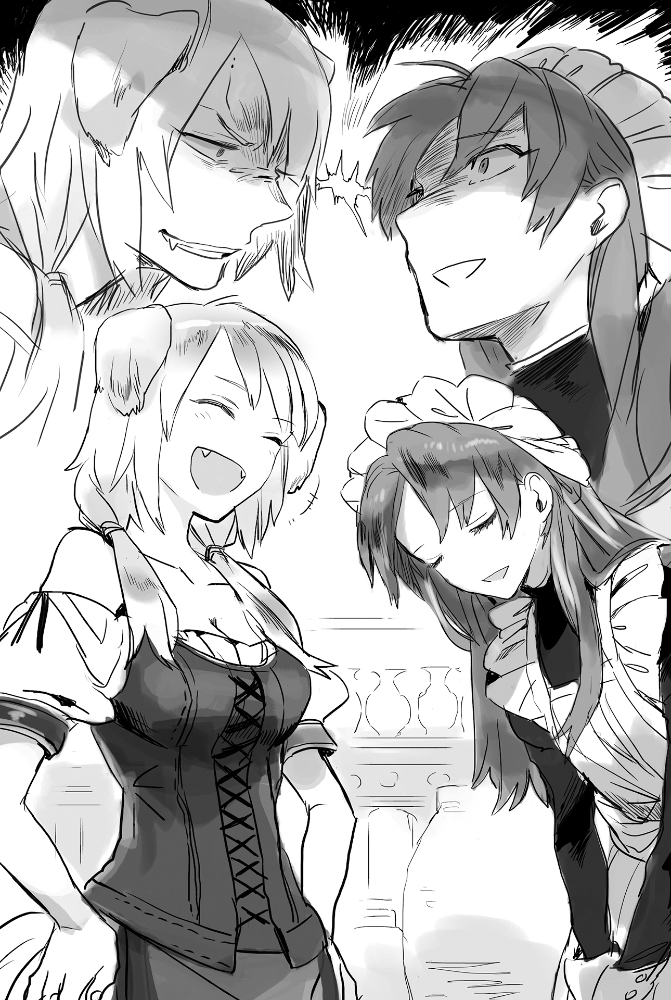

Chapter 1 – Domestic Affairs Cheat, Start
.
Part 1
「Here, the pocket money for this month. Don’t waste it on useless things, okay?」
「Tou-sama! Thank you!」
Baldr held out both his hands with a childishly energetic voice and accepted a silver coin from his father Ignis.
The majority of Cornelius House’s territory was occupied by forest, with little arable land. It couldn’t be described as a good situation for their finances, but even so they were still the house of a count. Their family was quite wealthy when compared to commoners in general.
The money that Ignis had given Baldr until now was 72 silver coins. If this amount was converted to the currency of modern Japan, it was the equivalent of 1.400.000 yen, more or less.
Ignis gave his son pocket money each month since he was five years old in order to teach him the value of money and how to handle it.
However, Baldr, who possessed knowledge from his previous life, naturally understood the worth of money. He even understood to a certain degree how much influence financial affairs had on society.
If one were just looking at the result, what Ignis did was simply the trigger that awakened the instinct of the man sleeping inside Baldr.
.
「Fuhehehe……this shine is always nice, no matter how many times I see it……」
「Young master. I’ve said this every time, it’s creepy seeing you making such a face.」
Seyruun knitted her pretty eyebrows seeing Baldr staring at the silver coin in delight.
(Geez! Even though the young master would be perfect if only he weren’t like this……)
.
Seyruun became Baldr’s personal maid around five years ago.
Ignis didn’t speak about the reason in detail, but it seemed to be caused by his parental love that wanted to give Baldr a friend of the same generation, since he was worried by Baldr’s unstable mind.
Because of that, Seyruun was also Baldr’s childhood friend. She herself also thought of Baldr as a cute little brother who was also a handful.
Seyruun nostalgically recalled the time when she was brought to meet with Baldr for the first time.
Baldr who was still six years old at that time was a boy with an attractive face and figure that everyone recognized.
However, the speech and conduct that he sometimes showed would betray his appearance. It made Seyruun realize.
No, she was forced to realize.
『Aren’t ye adorable?』 Baldr first said with a complacent smile and kind eyes, as though he was a doting grandfather toward Seyruun. And then Baldr suddenly yelled 『A little maid girl cameeee!』 with a red face while rolling around. He looked like her big brother who was three years older than her, who had been strongly influenced by a bad craze in the royal capital.
──She wished that he would stop sending glances toward her while blushing with that upward gaze.
Although she was still an eight year old girl, as a female, she was sensitive towards such a gaze by nature.
In addition, Seyruun was also popular as a beautiful girl with her brown hair and reddish brown round eyes that she inherited from her mother, and her symmetrical facial features. She wasn’t good with that kind of gaze, since she was a child.
.
「Onee-chan, want to play?」
The one who talked with worried eyes to Seyruun when she was feeling such confusion wasn’t the boy who felt like a grandfather or someone that was like her strange big brother, but a slightly shy boy.
Seyruun felt puzzled by Baldr’s personality that kept changing at the drop of a hat, but even so her desire to protect was incited by that worried gaze so much that she wanted to hug him. She bent her knee to match her line of sight with the boy and smiled.
「Of course.」
The instant she saw Baldr’s discouraged eyes, she thought of Baldr not as the eldest son of her lord who she should devote her loyalty to, but as a family member that she should treat with tender loving care.
Since that day, Seyruun became like a guardian for Baldr in the place of Maggot. She became his big sister who he could fawn on and also a friend who was close to him in age.
.
In the past Baldr was a delicate boy who was scared to even sleep alone.
But now at eleven years old he had grown to become strong-willed and impudent. It made Seyruun sometimes seriously question if there was some kind of mistake.
「Sey-nee, tell me a story?」
「Ufufu……young master really loves to hear old tales.」
The two would always be together, starting from the morning when Baldr woke up until nighttime when he went to sleep.
「Sey-nee is warm……」
Hugging Baldr, who liked skinship and sleeping, greatly stimulated Seyruun’s motherhood.
If she had a little brother, would he be this adorable?
The more she felt Baldr’s body temperature the harder it was for her to let go. It made her unconsciously tighten her hug.
She was starting to question whether her affection had gone too far, but even so she was unable to stop pampering Baldr.
On the other hand, her attitude would change completely towards the other personalities that sometimes appeared.
『N-no bra body pillow……guhah! Ouch! It hurts! Buberah! Gefuu!』
「A punishment has to be painful.」
『T-this is also good in its own way!』
Masaharu would look happy for some reason even though he was being hit. It made Seyruun get goosebumps and scream.
「……Get out of the young master already! This pervert!」
The next day when Baldr woke up he muttered 「My cheeks hurt for some reason……」. Seyruun could only look at him with an extremely guilty face.
.
As time passed and the two became conscious of Seyruun’s maturing womanly curve, the two didn’t sleep together any more. But actually, it only happened two years ago.
Until then they were together even when taking a bath, so it was only natural that Baldr was unable to oppose Seyruun.
Masaharu who sometimes excitedly yelled things like 『Real maid moeee-!』 with bloodshot eyes would be severely punished. Perhaps because of that he quickly stopped appearing.
However──
「This is the only thing that I won’t budge on even if it’s Sey-nee……」
The eleven years old Baldr let out a stifled laugh like a bad guy. He didn’t look like a little kid at all, as his appearance suggested.
It was Baldr’s true nature that only Seyruun knew about. He didn’t show this side of him even to Maggot at this juncture.
Seyruun recalled the adorable Baldr with a distant gaze and let out a sigh that came from the bottom of her heart.
「I’ve had enough. I’ve given up already……」
「Because I believe the young master won’t go astray from his own humanity……」 She didn’t say that. Because it would be troubling if Baldr who pointlessly had a lot of knowledge were to rampage even more than this.
「Kuhihi……the sensation of this cold silver is unbearable!」
.
「──I lied when I said I’ve given up. Kneel over there, young master.」
.
The instant she saw Baldr rubbing his pocket money on his cheek lovingly, Seyruun realized that her thinking was shallow.
It seemed it was necessary to strictly discipline Baldr once more in order to raise him to be the next head of the house, one that wouldn’t bring any shame to the Cornelius house no matter where he was.
.
Baldr’s love for money didn’t start recently.
He loved money so much that it made one suspect that perhaps he had loved it since he was born.
Before Baldr had awareness about the things around him, even before his other personalities rose to the surface, Baldr had shown interest in silver or golden coins instead of baby’s toys. He was a strange baby.
That tendency became striking since the memory of his past lives awakened when he was five years old.
A toddler who wouldn’t stop grinning when staring at a gold coin no matter how much time passed. That kind of eerie sight could often be found in the Cornelius House.
However fortunately or unfortunately, this strange habit of Baldr got remedied by Maggot who greatly misunderstood that Baldr liked shiny things.
Instead of a gold coin, she made the five year old hold a knife or a short sword and taught him how to handle sharp things. This was also an aberrant enough act that Baldr learned how dangerous it was to show his fixation towards gold coins in front of Maggot.
After that, Baldr stopped showing his hyper fixation toward money in front of his parents.
It was only Seyruun who was together with Baldr almost the entire day that he showed a glimpse of his true nature, to a degree that wasn’t too excessive.
Of course, this strange habit didn’t belong to Baldr himself or his previous life Oka Masaharu.
It was the sinful disposition of a minor general who lived during the closing years of the Warring States period──Baldr’s previous previous life Oka Sanai.
.
Oka Sanai, only a serious Warring States maniac or people from the land that he once governed would know this name.
He was born in the region of Wakasa. First he served Niwa Nagahide, a senior vassal of Oda Nobunaga. After that he was employed by Gamou Ujisato as a chief vassal. Due to Ujisato’s death there was an internal discord in the Gamou Clan and he moved to serve Uesugi Kagekatsu, a member of the Council of Five Elders (committee of daimyo formed by Toyotomi Hideyoshi to rule Japan until his son Hideyori came of age).
Sanai was known as a person skilled in war. He frequently raised achievements on the battlefield, but his name was remaining in history mostly because of the way he amassed wealth.
Sanai was also doing merchant-like activity like lending money to his colleagues and amassing wealth. He was the top money-maker in the Warring States era.
Furthermore, he wasn’t simply good at making money. It could be said that there was nobody who loved money as much as Sanai in the history of the Warring States period.
At the same time, he was also known as a valorous warrior. Once he led less than 150 soldiers to toy with Date’s army that actually numbered around 15.000. There was also the time when he blew away Date Masamune’s helmet with a single swing of his spear and even drove him to a corner where he almost managed to finish him off.
He also had a spirit of chivalry as could be seen with how he burned up the debt contracts between him and his colleagues in the Uesugi Clan, whose territory had been reduced, and wrote off all their remaining debt which had amounted to quite a hefty size.
When Sanai left the Uesugi Clan, Naoe Kanetsugu who once directly told 「Money is something dirty for a hand that is holding the war fan」 to Masamune was said to lament 「Uesugi Clan has lost a samurai who could be more useful for it than anyone else in the future」.
It was a true statement. At that time the Warring States period was ending and the era of civil administration was approaching. For the Uesugi Clan that was filled with a lot of muscle-brain generals, Sanai with his talent in money-making would be more precious than even gems in that new era.
.
Because Baldr had Masaharu’s memory, he himself had the awareness to feel ashamed about this fetish. Even so, the depth of Sanai’s sinfulness in regards to the desire for money had gained victory in Baldr’s personality development during his childhood.
「──I lied when I say I’ve given up. Kneel over there, young master.」
Baldr didn’t just want to rub the coin on his cheeks, he wanted to sniff the silver coin’s smell like a dog, and enjoy its metallic taste with his tongue. But he barely managed to suppress his lust.
Because it couldn’t be said to be wise if he agitated Seyruun even more than this.
「I’m in the wrong. Please forgive me.」
「Good grief……I hope young master is actually thinking that.」
Seyruun said that and let out a heavy sigh.
There was no way that Baldr would correct his conduct with just this. Seyruun who had lived together with him since they were little knew that better than anyone.
However, she was unable to be too harsh when Baldr prostrated himself before her without caring for his appearance.
In the end Seyruun herself was also weak against her adorable little brother.
「Then, I’m going out!」
「Ah! Young master, please wait! I still haven’t finished talking!」
「Sorry! I’ll listen when I go home!」
Baldr sprinted out from the mansion like an arrow. Seyruun could only place her hands on her waist and saw him off in exasperation.
She knew that lately Baldr was secretly scheming something.
It seemed like he was gathering the town’s children, but unfortunately the town’s brats had a strong sense of solidarity and wouldn’t tell her anything.

「……Sheesh, there will be punishment when you get home!」
Even so Seyruun didn’t have even the slightest suspicion that Baldr would get involved with any wrongdoing.
.
Part 2
「Sey-nee is completely suspecting me……」
However, he was still glad that his maid was Seyruun. It was because she would still overlook Baldr going off and doing things sneakily.
If it was a maid who was normally hired and under the command of his parents, he would have already been reported a long time ago.
In that sense, Seyruun was Baldr’s childhood friend as expected. She was an important existence for him who was just like a big sister.
.
「Baldr-sama! We’ve been waiting!」
Baldr had gone up until the town. The one who appeared in front of him as they raised their voice energetically was Tyros(テュロス). He had a large build that was unthinkable for a 13 year old. He had confidence in his strength and planned to leave his family in the future to become a soldier.
He was the third son of a tailor that was famous in the town. His facial features were well-ordered and his personality was also gentle and clever. He was plainly very capable, but for some reason he idolizes the younger Baldr from the bottom of his heart, and not just because Baldr was the son of the feuddal lord.
He was so loyal that it was like he was a large dog that was completely devoted to its owner.
Though of course, it was because Baldr had knowledge and a personality that far surpassed what his age suggested due to the memory of his past lives.
「Yosh, let’s head to the secret base.」
Baldr headed to a small arable land on the outskirts of the town with Tyros following behind him.
Baldr had saved the pocket money that Ignis gave him and used the money to buy a barren land that had been neglected from a farmer for cheap. That land was now becoming a small farm with a size around 1 are (a hundred square meter).
.
「Aa! Baldr-sama! Look, look! It’s grown this big!」
「Hey hey, is this thing tasty if they’re eaten?」
Two children were watering the farm happily in high spirits.
The two children were the boy Porco(ポルコ) whose father was a soldier and the girl Margo(マルゴ) who was the daughter of a merchant.
「I guess it’ll be time for harvest soon. We’re saved the trouble because this crop doesn’t really need to be looked after that much.」
Baldr muttered while looking over the farm.
「……I heard from Otou-san though. It seems this plant tastes bad and cannot be eaten, you know?」
「Eee~, that’s true? Baldr-sama?」
Apparently Porco who had a strong curiosity had tried gathering information on his own.
On the contrary, Margo who had a big appetite had her head filled with nothing but ideas of eating the harvest.
「Well, it’ll taste bad if you eat it as it is. Though the nutritional value isn’t bad even then.」
Baldr felt his cheeks loosening seeing the two’s reactions.
The three of them were older than him, but even then he felt that they were younger than him due to his previous lives’ memories.
「……Then, what are we going to do with this?」
Tyros, who was the eldest among the three, took a peek at Baldr’s face with deep interest.
There was no way that this thing was just a food that tasted bad, since it was Baldr who ordered them to make this farm. His eyes showed a deep trust.
Baldr felt embarrassed being looked at by such an earnest gaze. He became driven by a sense of mission that he had to answer Tyros’s great expectation, and so he answered with a puffed up chest.
「Then let’s postpone the harvesting. Today I’ll teach you guys what we’re going to make with this.」
「Hoorayyyyyy!」
Even Tyros who was usually calm was jumping in happiness. It seemed like he was really curious about the crop’s true identity.
(After all, not a single person here has noticed just what this is, even though it has been growing naturally in the mountain all this time.)
Baldr pulled out one of the crops that had grown big and walked toward a plain wooden hut that was built beside the farm with the three kids following behind him.
「Then Margo, chop this into small pieces. Tyros and Porco, put some water into the pot and heat it over fire.」
「Understood!」
The three children busily moved around to do the preparation. Baldr stared at them with a smile while secretly chuckling with a villainous face.
(Ku ku ku……this day finally arrived. It’s time to make a killing using a modern person’s information cheat!)
.
The craving for money from Oka Sanai and the knowledge of Oka Masaharu who was slightly ill with chuunibyou were combined consistently inside Baldr. This actually happened around less than a year ago.
Until then, Baldr was living with three personalities. The boy Baldr, the high school student Masaharu, and then the old general who survived the Warring States period Sanai. Their personalities would show up alternately each time there was something that strongly attracted their interest.
Baldr managed to safely grow up in such a condition was due to his parents’ unshakeable love, his interaction with Seyruun who was around the same age as him, and above all else, it was due to Maggot’s hellish training that Baldr wasn’t allowed to stay idle and worry about useless things.
Regardless of whether the harsh training that put his life at risk was something that was wished for or not, it matured the boy’s spirit and desired for the three personalities to join hands together for the sake of surviving to see tomorrow.
It could be said that the current Baldr who should be called the “Neo Baldr” was born in order to escape from Maggot’s evil clutches.
Baldr trembled and held his head when he recalled the days that he wished to forget.
Right now the crop before his eyes was more important than recalling that hell.
In the event of its completion……first he would save money to buy more lands. He would increase the number of workers and form a network with merchants…… ku ku ku, my dream is spreading infinitely!
.
Seeing Baldr like that, Margo, Porco, and Tyros looked at each other and whispered.
「Baldr-sama is making that bad guy face again.」
「When I see that face, I can be relieved that he is a kid like us……」
「No no, surely Baldr-sama is thinking about something that we can’t even imagine.」
Baldr’s mask had already been seen through by the children.
.
Now then, what Baldr was cultivating in the farm was actually sugar beet.
Beet, it was also called sugar radish. It was a plant that rivaled sugarcane as a raw material for sugar.
It had a lot of leaves, so it was used as a leaf vegetable, while the remaining root part was used as fodder for livestock. It was a food with a long history, but even on Earth it took a really long time before it was used as a raw material for sugar. Actually it was only starting from the middle of 18 th century.
Aurelia Continent had a temperate climate. Here sugar could only be produced by the countries along the coast commencing with Santjuan(サンファン) Kingdom in the south. Of course, the sugar was made from sugarcane in those countries.
In other words, the idea of extracting sugar from sugar beet still didn’t exist in this world.
「Have you properly cut it into fine pieces? Then let’s put them into the pot and boil it. Pay attention to the fire’s strength so that it won’t become too hot. This way will result in something delicious.」
Baldr gave instructions one by one.
「Hoorayyyy! It’ll be delicious just as I thoughttt!」
「Hmmm……I heard that the taste is bland though……」
After that they quietly boiled it for an hour. Margo got bored in the middle, but Porco who was brimming with curiosity continued to adjust the fire while keeping watch quietly.
This kind of perseverance was Porco’s characteristic. He would become a good guard like his father in the future.
「Yosh, lightly squeeze the boiled root using a cloth. Then boil it even more while scooping up the scum and then it’ll finish.」
「That’s all~~?」
Margo tilted her head.
「Well, the amount of the finished product won’t be much but……you guys will surely be shocked.」
「There won’t be anything remaining if the juice is boiled down……」
Porco didn’t look convinced, but after strengthening the fire for ten minutes, the sap that was squeezed out from the root was starting to thicken like starch syrup.
When the brown and thick liquid was moved on a plate, Margo ran out of patience and clung on Baldr’s right arm demandingly.
「Hey, hey, can I eat this? This is the completed product right?」
「There isn’t much of it, so only lick a bit of it with your finger.」
Then Porco and Tyros also reached out with their fingers impatiently.
「Time to dig iiiin!」
The three put their fingers in their mouths. Then they froze in that posture for a while.
.
「IT’S SWEE~~~~~~~~~~~~~~TT!!」
.
The three let out a delighted voice. And then they became absorbed with bringing the beet sugar into their mouth.
In this continent, pure sugar made from sugarcane was a precious item that was hard to obtain.
Beekeeping also hadn’t spread. Because of that the commoners could only taste something sweet from fruits at this time.
「Uwah! Amazing! Baldr-sama, I’ve never eaten something this sweet!」
「This is sugar isn’t it? How? How is a sugar created from this kind of garbage potato?」
「I can’t believe it, this is……amazing……」
With each lick Margo placed both her hands on her cheeks, with a face that looked like they would really fall off. Porco and Tyros were showing pure shock from their whole body after learning that sugar could be extracted from an ingredient that nobody had ever even glanced at. Baldr narrowed his eyes in satisfaction at their reaction.
(Now, with this my goal to raise fun is going to be achieved for the time being. But my ambition has only just started! More money! More, more! All the money! Let’s rake up so much money that it’ll be too tiresome to count it! And then that──no no no no, that one is no good. If I do that then it feels like it’ll be over for me as a human being. But, but……kuh! Even though it feels like this time a mountain of gold coins is within my reach……!)
「I wonder what’s wrong with Baldr-sama?」
Margo looked confused. Tyros answered her.
「He is thinking of something difficult right now.」
Porco muttered quietly beside them.
「He look like he’s writhing to me though……」
As expected, even these three couldn’t possibly imagine that right now Baldr was fighting Sanai’s desire to cover the floor with gold coins and roll around naked on them.
.
This was repeating the same thing but, the extraordinary Warring States general Oka Sanai who cornered the one-eyed dragon Masamune and was only a step away from taking his head(furthermore with a small army force that didn’t even reach a hundredth of the enemy army), he had a certain strange habit that couldn’t be explained with any decent excuse at all.
It already wasn’t at the level of burning with a tenacity to save money with his lending business.
In reality, there were many generals other than Sanai who were also a miser with money. Famous generals like Fukushia Masanori or Katou Kiyomasa, they were misers who preached the importance of frugality and saving money to their descendants.
However, just once a month Sanai would lock himself inside his residence and carried out a ritual alone.
And shockingly that ritual was that he would cover the surface of a room with koban coins, strip naked, and feel the texture of the coins with his entire body.
「Fuhyahahaha! The feel of this gold is unbearable!」
「These joys art what I’m living foorrrrrr!」
Most likely even throughout the whole Japan, this man was the only one who carried out a version of bathing with money in the era of Warring States.
Sanai was capable both as a warrior and as a domestic ruler, but it might have been that the influence of this particular hobby that couldn’t be told to other people was what made him change lords several times. That possibility certainly wasn’t zero.
.
(Damn it, the money……the money’s evil power is leading me astray……endure! Endure it Baldr!)
.
About five minutes were necessary until Baldr recovered his serenity using his desperate perseverance.
「Remember, you mustn’t tell anyone about the sugar. Those who talk will instantly get kicked out of our group, I also won’t let them become my retainer. This is also a trial in order to become my retainer in the future, you all understand?」
「Of course!」
「It’ll be fine~」
「Please leave it to me!」
Porco, Margo, and Tyros all nodded strongly.
.
Baldr ordered the three who were still tense after tasting sugar for the first time in their life to harvest the remaining sugar beet, and then he headed to the shopping district.
It was afternoon. The number of passersby on the street was increasing. Baldr was walking on the street and a single merchant house came into view.
It was a small building, but it had a refined atmosphere. A large sign with the words “Savaran Company” written on it was decorating the shop’s entrance.
「Are you making money?」
「So-so, I guess.」
Baldr’s question was instantly replied to with words that sounded like a password. The one who replied was the owner of Savaran Company, Selina Savaran(セリーナ・サバラン).
「Looks like it’s going well for ya, Baldr.」
Selina showed a smile that was like a blooming flower. She was an 18 year old maiden.
Her long and straight bridged nose, her rose colored small lips, and then her almond eyes gave the girl the aura of a capable beauty rather than a mere beautiful girl.
But for Baldr, his most important concern were the two ears on her head──they were two dog ears that drooped down right in the middle.
Yes, she was a beastman.
Each time Baldr saw her ears with their first-rate fur, a desire to fluffle them to his heart’s content would strike him.
He had the feeling that if he could do that, he would be able to obtain the answer to the proposition of 「Dog ear or cat ear, which one is justice?」 that Masaharu was pondering even up until the point just before his death. But no matter how many times Baldr asked Selina, she would never allow him.
Beastman wasn’t a rare race at all in Aurelia Continent.
The lineage of the hero Brocas(ブロッカス) who had a contract with the beast king Zoras(ゾラス) was propagated. The beastman race was split into the dog ear race and the cat ear race.
A lot of beastmen had better physical ability and five senses than humans, but it was only a slight difference. They were no match for the real dog and cat.
In other words, they were just human, but with animal ears and a tail.
Selina’s father had unfortunately died in the past, and so she inherited her father’s company. But then her uncle was aiming to obtain her assets. Due to Selina’s good looks too, he tried to kidnap her. Baldr saved her from his attempt. That was how they met in the past.
Selina could vividly recall Baldr’s gallant figure at that time.
Along with that recollection, she was unable to stop herself from feeling the sweet ache as a woman in her abdomen.
At that time Baldr was still nine years old, but Selina was convinced that his gallant figure wasn’t at all inferior compared to a hero in legend.
.
Savaran Company was a company that was opened by Selina’s father Massoud(マスード). He who was a peddler fell in love with Selina’s mother Lilia(リリア) and opened this company to settle down.
The company was small, but using the connections and market that he cultivated during his time as a peddler, this company was considered as a promising company within Cornelius territory.
If Massoud could continue running this company without any accident, it might have even been possible to develop this company into a distinguished and large company.
However Massoud was busy running around the kingdom looking for a cure to save Lilia, who was ill with an incurable illness that rotted away at her internal organs.
When he learned that the sickness couldn’t be cured even with the church’s divine spirit magic, he turned his hand toward a forbidden dark magic to exchange the rotted organs with his own organs.
At that time he had nothing else he could do but grasping at straws.
If Massoud was still thinking normally, there was no way he would try something suicidal like that. But with the death of his wife fast approaching, he didn’t have the composure to make a calm judgment.
As a result, Massoud transferred his own organs to his wife and died.
Lilia also died soon afterwards, since her body showed a rejection towards organs that came from another person.
Thinking carefully, if there was that kind of convenient magic that could heal such an incurable disease, it would’ve been more well-known. Right now Massoud must be receiving an extremely severe scolding from Lilia in heaven.
Her father was intelligent, had the ability to take action, and was also amiable, but he was always careless in some aspects like this.
.
And so the sixteen years old Selina was left alone. Two days after the funeral, her uncle from her mother’s side who she didn’t really know appeared before her.
He intruded into the shop acting as if he owned the place, claiming that he would look after her as her guardian, so Selina replied 「This company is already mine ya know, I already registered it to the merchant guild and received permission」.
Then the uncle’s expression immediately changed to something like a demon’s, and he started trying to persuade her.
He said, 『The company cannot be entrusted to a little girl with no experience』.
He said, 『I’m a renowned merchant even in the royal capital, so everything will go well if you leave the company to me』.
Selina who completely didn’t believe that her uncle was a capable merchant refused his suggestion.
No matter how she looked at him, he was only a hyena aiming at her property. In fact, her observation was right on the dot.
The uncle who knew that it was legally impossible to overturn Selina’s claim left Savaran Company after shouting filthy curses at her.
She wasn’t so stupid and weak that she could be tricked by that kind of trash. Selina believed that, but just a few days later, Selina was made to realize that she had misjudged how much of a piece of trash her uncle was.
.
「You damn little girl……I was just going to sell you off to a brothel if only you listened obediently.」
「Sorry but I have high ideals when lookin’ for a man. I refuse to have anything to do with a pig.」
It was Selina’s carelessness.
She must be feeling flustered too because she had only just inherited the company.
A regular customer approached her with a big business offer. When she thoughtlessly came to a warehouse that looked empty, her uncle was waiting for her there with a nasty smile and some thugs that followed his orders.
「Do ya think that nobody will find out if you do something like this?」
Selina tried threatening even knowing that it would be useless.
Murder for money would be sentenced with death, no exception. If Selina was killed, there was a high possibility her uncle would be suspected.
「A girl who lost both her parents fell into despair and drowned herself──there are a lot of stories like this. There won’t be any proof remaining if you drown.」
「Ya-, fiend」
(If I die like this, I’ll get scolded by mum, just like dad……)
Selina still didn’t plan to give up, but she resolved herself because the possibility was high that this place would be where she died.
There might be a chance if it was just her uncle alone, but the number of the thugs was eight. Furthermore, among them there were two brutal looking people who clearly had killed someone else before.
Although beastmen had more or less better physical ability than humans, she immediately realized that this wasn’t a battle that she could win.
But, it was then──
『Look at what we hath here. Some thugs art ganging up on a single cute child……』
It was a high pitched voice of a kid. Everyone there turned around in surprise. There they found a pretty boy that looked like an angel.
The boy──Baldr spoke something incomprehensible. His words sounded like a foreign language and no one there was able to understand him, but from his atmosphere he was clearly hurling insults at her uncle and his gang.
「This brat!」
Thinking normally, Baldr looked like a poor victim who got involved in an incident.
However just from looking at Baldr’s eyes, Selina was convinced that she was saved for some reason.
Just like how people would come to a realization when they saw a lion or a tiger, just by looking at the eyes of the strong their strength would be conveyed.
Beastmen were especially sensitive to such things.
「Oi, kill him. Brat, curse your own stupidity in that world.」
『What, so ye guys art bored of living? Now I’m pissed off……』
The thugs must be thinking that it would be no trouble to pin down or kill a boy that was smaller than even Selina.
They reached out toward the boy with vulgar smirks. Baldr moved at that instant like lightning.
It truly happened in a flash.
He stole a blade from the pocket of the nearest thug and stabbed his throat without a shred of hesitation. And then he stabbed the heart of another person in a single flowing motion.
Baldr stole the sword that man was equipped with. At the same time he threw his blade with the speed and precision of a trained hand. The third thug that was approaching was defeated with that.
Baldr swung around the long one-handed sword that didn’t suit his small body as a warm-up exercise, then he provoked Selina’s uncle and his thugs with a fearless grin.
『This sword is a bit hard to use but, oh well. Let’s fight, ye morons.』
Selina’s uncle and his thugs opened their eyes wide seeing the disdainful expression that Baldr sported.
There was clearly an arrogance that the strong would show to the weak in that look.
These thugs were in a position that was looked down upon by society due to them daily taking advantage of someone else’s weakness. It was impossible for them to mistake the kind of expression that Baldr showed.
「T-t-this brat! Kill him! Kill him already!」
At this time the two brutal looking men had sensed that Baldr wasn’t an ordinary kid from the air that he gave off.
On the other hand, the other thugs who only measured Baldr from his appearance rushed forward in high spirits to take revenge for their friends. However Baldr’s small body vanished from view at the next moment.
Baldr crouched low near the ground and cut off the shin of three people.
「GYAAAAAAAAA!」
There was nobody who could stand after they lost their dominant leg.
Baldr didn’t even spare a glance at the men writhing in intense pain and threw a knife toward Selina’s uncle.
「Hih……hiiiii!」
Her uncle’s scream sounded closer than Selina expected. She unconsciously leaned back and turned around.
It seemed that her uncle had secretly closed the distance to take her hostage. He was a sleazebag in all respects.
「I’ve paid you guys a lot of money! You guys get that? Kill that brat already!」
Her uncle dodged the knife just barely and gave the order. In response the brutal looking men finally took action. They were emitting killing intent that was at a different level from a mere thug.
Even so it didn’t cause the slightest change on Baldr’s composed bearing.
It was because he had instinctually sensed that the men had only ever fought opponents that were weaker than him.
『That Hahago-dono is hundreds of times scarier than this.』
Baldr didn’t hesitate.
He casually walked toward the opponents as though he was walking on an empty field.
Thinking that they were being underestimated, the two men slashed with a movement that was far more refined than the other thugs, but that was all there was to it.
Baldr dodged the sword and slipped onto the chest of one of the men, then he lifted up the man from his waist and threw him down on the ground. His heel then immediately came down on the man’s throat with his entire body weight.
「Gegeh!」
The man let out a groan that sounded like it was squeezed out from his lungs before he stopped moving.
The other man felt cold sweat trickling from his whole body seeing the boy wordlessly stamping his partner to death without showing any openings at all.
(I can’t win. We are quite confident in our skill, but he just got stamped to death like a worm. There is no way I can win against this kind of opponent.)
In the corner of his eye, the man saw his employer persistently still trying to approach the girl.
「Oi, look there. The girl is going to die, you know?」
The man who sensed his defeat ran away at full speed while saying that over his shoulder at the same time.
The man was already three steps away from the sword range at the instant Baldr’s attention was turned toward Selina.
The man kept running with increasing speed. He sighed in relief believing that he had escaped the danger to his life.
However──
*Gatsun!*
『Humans can die even from a thrown rock, see?』
A slightly flat rock that could be found on the riverbed hit the back of the man’s head.
Even such a rock that could be found anywhere could become a weapon that stole a human’s life if it was in Baldr’s hand.
A lot of blood flowed from the head of the man who fainted and collapsed. The ground was dyed red.
It didn’t matter whether his flame of life sputtered or not, he wouldn’t stand up again.
「D-don’t move!」
Selina who was entranced by Baldr’s movement remembered that her uncle was trying to take her hostage when she heard that voice.
What a fool. Even though he might be able to at least keep his life if he ran away.
「Throw away your sword! Don’t you care what’s going to happen to this girl!?」
Selina wondered if there would be any meaning in taking her hostage when she didn’t know this boy at all, but it seemed her uncle couldn’t understand that with all the blood that rushed into his head.
『I can kill ye faster than ye can kill that girl.』
「Just throw away your sword! You hear──」
*Hyun* There was the sound of cutting wind. At the same time, a sword caved her uncle’s forehead in and he died with blood spurting out.
He didn’t even know what had happened before he died.
Even Selina couldn’t see Baldr throwing the sword at all.
As she expected, there was no meaning in taking her hostage, but in an entirely different meaning from what she expected.
.
「I, I’m in yer debt……」
Selina bowed to show her gratitude.
I don’t think that there’ll be any problem but, I still can’t understand this boy’s language, so let’s refrain from provoking this boy needlessly ──the instant Selina thought that, her knees folded and she sank down on the floor.
When she looked at her feet, she noticed they were shaking.
The fact that she almost got killed had finally caught up to her.
「Fueh?」
Suddenly a warm hand patted her hand at that timing. A stupid voice slipped out from Selina’s mouth.
「Errr, I’m sorry, did I scare you?」
When she noticed, Baldr was now talking with the continent’s official language that she was familiar with. He embraced Selina’s head and continued to pat her hair kindly.
Although Selina didn’t notice that Baldr’s gaze was fixed on her dog ears.
『Dog ears……real dog ears……another world rocks!』
Baldr muttered other incomprehensible words while smiling awkwardly. It was an innocent face that was completely far removed from like the person who emitted killing intent like that of a demon god until just now.
Selina was moved to tears from the feeling of relief, but then she snorted in laughter seeing Baldr’s panicked state.
.
Selina was immersed in that recollection while looking at the eleven year old Baldr in front of her who had grown taller and more masculine.
He had good looks which gave off a friendly charm that would surely be well received among women. He had truly grown into a figure that was just to Selina’s liking.
「Try licking this.」
「There isn’t much of it eh……」
「Don’t ask for extravagance when it’s just a trial product.」
Selina tossed the brown pill that Baldr handed to her into hre mouth.
A sweetness with unique depth to it melted at the tip of her tongue. Selina’s eyes immediately narrowed in happiness.
「Nn~~~! Sweetness is the bestttt!!」
Although Selina owned a company, sugar wasn’t a product that could be tasted that easily even for her. Not only was it expensive, the amount of sugar that was circulating in this world was absolutely insufficient in the first place.
「So?」
「It will depend on the person’s preference but, as for me I like this sugar better.」
「Yossha!」
Baldr cheered and clenched his right hand into a fist and pulled back his elbow.
Selina didn’t understand the meaning of that gesture Baldr made, but it still conveyed Baldr’s happiness to her.
「I want to make this as our territory’s local specialty, but growing the crops themselves is easy. One day it will surely be exposed. That’s why I decided to use it to make money for the sake of the next step. I’m planning to expand the planting of the crops.」
「And ya gonna leave the sales to us for that eh?」
「Yep, that’s why let me touch your ears already──」
Baldr’s hand reached out toward the dog ears that had great fur. But Selina pinched his palm and smiled mischievously.
「I’m not that cheap of a woman ya know?」
Beastwoman would only allow their ears to be touched by a man who they opened up their heart to.
In her heart Selina thought that she was alright if it was with Baldr, but she didn’t want to give him permission when he asked with a joking attitude like this.
If he would love her as a woman then……she wouldn’t be unwilling.
「……Too bad. But to be more exact, what I mean is a bit different from leaving the sales to you I guess?」
「……hoo」
Selena sensed that there was a hidden meaning in Baldr’s words and changed her expression.
In one part due to the strong impression that Baldr left in her when he saved her, Selina herself didn’t think of Baldr as a mere eleven year old like his appearance suggested.
She especially felt that when she saw his mischievous smile.
「Actually, I want you to lend me the name of your company. Of course I’ll have to rely on Selina to do much of the practical business but, I want to move the money following my plan.」
「……How far are ya going to meddle?」
「Only with the fundamental policy. What to buy. What to invest in. Will it be full price or half price? I’ll leave the rest to Selina’s own judgment.」
「And how much is gonna be our share?」
「How about ten percent of the profit? I’ll also pay the cost for using your company’s name.」
Selina quietly leaned forward and brought her face closer, up to the point as if she were a lover about to give a kiss. She glared at Baldr with rough nasal breathing.
「Ya rate us too cheaply, thirty percent.」
「I’ll be the one who funds it all. The profit you’ll get is already enormous. Fifteen percent.」
「Doesn’t matter what ya gonna sell or how much ya promised, it’ll all be just a pipe dream without our cooperation right? Besides, do ya have anyone else who ya can rely other than me? Thirty percent.」
Selina was far more obstinate than Baldr imagined. She showed no sign of lowering her price at all. Baldr scratched his head with a troubled look.
It was true, he had no other acquaintance other than Selina who he could ask to do this.
It was a financial product that didn’t need any capital guarantee, so there wouldn’t be any risk for Selina in this work anyway……that was his lighthearted thought before, but it seemed that he underestimated the matter too much.
It was easy to concede here, but thirty percent……who knew how much money that would be in the future. He was reluctant to part with that much money. It felt like his body was being cut all over!
In that case──
「……Then, I’m fine giving you thirty percent if you let me touch your ears.」
「Guh!?」
The unexpected retort made Selina the one who went red and get taken aback this time.
Selina overcharged the price simply because it was galling for her to let everything go Baldr’s way.
She knew that Baldr had no one else other than her who he could rely on, but in the unlikely event that she lost her connection with Baldr here, Selina would be the one with a greater loss instead.
Baldr’s invention would undoubtedly produce a huge fortune. Naturally Selina too wasn’t seriously thinking of refusing Baldr’s proposal.
The dangled carrot that was a thirty percent share and the desire of her maiden heart to use this good chance to take a step further in her relationship with Baldr made Selina hesitate with a bright red face.
「I-if it’s just for a bit……just this once okay?」
Selina even forgot her own words just now 「I’m not that cheap of a woman」 and presented her droopy ears that were laying flat on her head toward Baldr.
(That’s right. This is for the thirty percent share. It’s not because I want Baldr to touch them……)
「Funyah!?」
The feeling of Baldr’s slender fingertips rubbing the tip of her ears made a sigh slip out from Selina’s mouth.
Selina felt ticklish, but there was also euphoria that was filling her heart. She unconsciously narrowed her eyes and concentrated all her focus into her ears.
Her shoulders were shaking slightly. Her ears were laying flat as though in fear. Those things were stirring up Baldr’s excitement.
The memory of Masaharu who was ill with chuunibyou resurrected at the back of Baldr’s mind.
Dog ear is justice──the question of which was better, dog or cat. That proposition which he thought would go unanswered for eternity was now answered. Baldr was convinced of that.
(T-this fluffy feeling……it’s irresistible!)
「Nn……fukyuu……」
Selina was leaking out small cries like a puppy. She definitely didn’t dislike having her ears touched. It was clear when looking at her fluffy tail that was wagging energetically.
Baldr enjoyed the silky texture of the ear’s fine fur. Baldr who had his long standing desire fulfilled wasn’t satisfied with just that. He persistently rubbed the pink colored back of the ear which was a sensitive spot.
And then unexpectedly he leaned forward. He couldn’t resist the command of his desire that was going berserk.
However.
.
「DON’T GET CARRIED AWAYYYYYYY!」
.
「Guhah!」
Baldr’s stomach became completely open because he tried to embrace Selina’s small head. Selina’s full powered attack which hit that place sent Baldr flying for three meters.
It was a splendid body blow from Selina that didn’t give any opportunity for Baldr to react, even with his skills in martial arts.
「J-just a little! I told ya just a little! What’s more it was my first time my ears were touched, and yet ya weren’t holding back at all……!」

Seeing Selina’s flushed face and her teary eyes, Baldr realized that he had overdone it.
Fluffiness was certainly justice, but a woman’s tears overturned even justice!
「I was in the wrong.」
「Th-this time is an exception ya got it? I won’t allow ya to touch them next time if ya can’t be gentler.」
「Yahoo! After two years of dogged perseverance, finally fluffing privilege GETTTTTTTTT!」
「O-only when I give the permission okay? I won’t let ya touch them that easily no matter what!」
That way of touching was dangerous to their reasoning──mainly to Selina.
.
「……Can I ask the two of you what have been you doing just now?」
.
「Eh?」
A voice suddenly spoke. When they turned toward the voice, there was the head clerk of Savaran Company, Rorona(ロロナ) making an exasperated face that was slightly blushing.
「NOOOOOOOO!!」
Baldr and Selina screamed in embarrassment when they noticed her standing awkwardly there.
「Good grief, president should be old enough to know better……well, you aren’t that old yet but, president is still the proud head of this company, so you have to be a bit more level headed.」
「I have no excuse.」
Selina was seriously dejected from the calm scolding of her trusted confidant Rorona.
Rorona was a senior employee in this company who was raised by Selina’s father and mother as a candidate for the company’s future top brass.
Even so she was still 26 years old. She was an alluring maiden with beautiful black hair that was tied into a bun and had a curvy body.
There had been countless men who tried to woo her since the past, but there still wasn’t any romantic gossip about her. Selina couldn’t help but felt that it was a waste, even though it wasn’t her problem.
「──It’s none of president’s business.」
「But I didn’t say anything!?」
Selina wasn’t incompetent by all means, but she was still unable to oppose Rorona.
In fact, the majority of Savaran Company’s practical business was still taken care of by Rorona with her outstanding ability to deal with paperwork.
.
「Young master Baldr, it appears that you’re going to do something interesting, but, if you allow our company to be involved in it then a share of twenty percent will be enough for us.」
The share amount she proposed was smaller than the number Selina insisted just now. But Selina seemed to trust Rorona and didn’t interrupt her.
「……You will have to take responsibility for the risk on your own, you know?」
「Of course, we shall have to adequately scrutinize whether this work will have that much worth or not.」
Rorona seemed to be shrewder than Baldr thought. If he wasn’t careful, Savaran Company might take over this business that he was going to start with their overwhelmingly superior amount of capital.
This company had the capability to carry out Baldr’s plan on a scale that was dozens of times bigger.
「Please don’t worry. We won’t do anything dishonorable toward our important customer.」
Rorona smiled as though to say that she had seen through Baldr’s thinking.
In fact she had really seen him through.
Thinking carefully, if Baldr used the connection of his father Ignis, he would be able to make use of a company that was bigger than Savaran Company.
There was no way the sharp-witted Selina and Rorona would do anything dishonest when the other party was a precious source of revenue like the heir of a count house.
Baldr scratched his head bashfully before he nodded at Rorona.
「If that’s so then, take care of me from here on as a partner.」
Rorona grinned boldly and then she muttered 「Right right」 as though there was something that she had recalled just now.
「Although the young master called it the compensation for the share increase, but please refrain from toying with the president’s ears too much. For beastman, the only one they will allow to touch their ear is only a member of the opposite sex that they have no problems even entrusting themselves to. Though it’ll be different if young master Baldr wants to accept the president as a partner in both public and private matters.」
「Ueh?」
「……Seriously?」
Selina went bright red until her neck and let out a strange scream. Beside her Baldr realized that somehow he had stepped on an outrageous landmine.
「Although it looks like president herself doesn’t seem disagreeable with it.」
「E-enough! Rorona! I’ll be angry if ya keep this up!」
「Please pardon my impertinence.」
Rorona’s dignity was completely winning here.
Selina would act like a shrew older lady in front of Baldr, but as expected she was at a disadvantage when in front of Rorona who had taken care of her since she was a child.
「Then, can you quickly arrange to sell this sugar in the capital? Then using that money……there is something that I want you to buy, as many as possible──」
.
「Just where have you been loitering at!?」
In the evening, what greeted Baldr when he returned to the mansion was his father Ignis who was standing imposingly at the entrance with an angry expression.
His father was wearing a gorgeous outfit and there was also the smell of perfume from him. Baldr went 「Ah」 in realization of his blunder after seeing his father’s appearance.
「Come to think of it……there is a party tonight.」
「Don’t forget that kind of thing! Go change your clothes quickly! Good grief……even though you’re the star tonight!」
「I’m sorry, I’ll hurry.」
His mother was training him hard just like usual in the morning, so he completely forgot. He wondered what she would do if he got terribly injured this morning from that training……?
He guessed that she would say something like「Just think of that wound as a badge of honor. Enough with the tedious talk, get out already to the party」 without giving a damn. He could imagine Ignis holding his stomach due to the pain if that happened.
Although it would be just Ignis reaping what he sowed for falling in love with someone like Maggot, as expected, even Baldr couldn’t help but feeling pity.
(Now then, let’s prepare so that Tou-san’s stomachache won’t get worse than this.)
.
Baldr rushed to return to his room. There, Seyruun was waiting for him with a very dark smile.
「……Young master Baldr, you return early.」
「Uh……sorry……」
This was awkward.
Baldr felt a chill like there was a block of ice thrust into his back. He desperately bowed his head.
「Master and mistress asked me, where the young master? Does the young master have any idea just how embarrassing it was for me when I couldn’t answer them?」
Seyruun stared blankly at Baldr to express her resentment. Baldr could only prostrate himself to apologize.
Ignis wasn’t a tyrannical lord so Seyruun wasn’t punished, but even so, if this were another noble house it would even be possible for Seyruun to have been fired.
Baldr only noticed now that his thinking was too naïve.
As expected Seyruun wasn’t just a mere maid for Baldr, for him she was an important existence that was like his big sister and also his childhood friend.
In the first place without her at his side, it was extremely doubtful whether Baldr could maintain his personality’s identity like right now.
Baldr obediently kept his head bowed and apologized to Seyruun from the bottom of his heart.
「──I’m really sorry. I’ll talk properly with Sey-nee too from now.」
To be honest, Baldr had also felt that there was a limit to progress with the business discussion while keeping it a secret from Seyruun. It would be best to properly explain the situation to her and win her over as his ally.
Even from Baldr’s perspective, Seyruun had gone above beyond being a mere maid. She was definitely an excellent assistant for him even if she was evaluated without Baldr’s bias.
「Please don’t do something like this anymore. Then, let’s hurry to change clothes.」
Seyruun too couldn’t stay angry anymore than this after her cute little brother apologized to her by bowing his head.
Seyruun smiled wryly at how weak she was against young master Baldr while pulling his hand to make him change into the dress suit that had been tailored for the party.
.
Tonight would be the first time for the eldest son of Count Cornelius, Baldr Cornelius to show himself in a formal setting.
Normally the debut of a noble’s eldest son would be done when they were around five years old. The reason why Baldr’s debut was delayed until he was eleven years old was because Baldr had a weak constitution. That was the rumor that mainly spread.
For the nobles in the vicinity of Cornelius territory, regardless whether they liked the count or not, the strength of the next generation who would shoulder Cornelius house in the future was a serious matter of interest.
It might not really matter if it was about a royal court noble in the royal capital, but Cornelius House was an existence that couldn’t be made light of for the military authorities and the nobles near the border.
Count Cornelius’s territory was the cornerstone on the national border with Haurelia Kingdom.
Although the two countries were currently at peace, it was hard to say that the relationship between the two had improved. Count Cornelius still had a heavy responsibility in regard to the national defense.
Although it was also true that due to welcoming a mere mercenary as his legal wife, Ignis was said to dirty the noble’s blood and his reputation among the nobles had fallen.
Because of that, the number of people that was invited for the party tonight was extremely few if one were to take the Cornelius House’s fortune into consideration.
.
「Long time no see, Ignis.」
「It looks like you haven’t changed, Mattis(マティス).」
The two men exchanged a firm handshake and hugged each other’s shoulders.
For Ignis who was hated by upper class nobles, this man was one of the few people who he could call as a close friend. Mattis Bradford(マティス-ブラッドフォード), he was Ignis’s comrade in arms in the past war.
Right now he was succeeding the viscount house of Bradford at the northwest region of the kingdom, but he belonged to the Blue Flame Knight Order of the kingdom army during the war.
His house was also known as a military family, even if it weren’t to the extent of the Cornelius House. The military strength that he possessed wasn’t something that could be underestimated.
Ignis’s eyes moved toward the girl beside Mattis who was looking up at him.
「Teresa(テレサ) has also grown big huh.」
「Uncle yourself is also looking healthy. By the way, where is Baldr? I want to meet him after so long.」
「He is still changing clothes right now. I think he’ll come soon though.」
Teresa was a beautiful girl with red hair that suited her looks. She grinned broadly. Her appearance looked like a lively boy at a glance.
「As expected, I’ll hold myself back tonight, but be ready to see me taking a win against Baldr tomorrow, uncle. I also have grown a lot stronger since then!」
When his best friend Ignis sent him a wordless question asking just what was the meaning of this, Mattis could only shake his head in resignation.
Despite her beautiful looks, for a noble lady Teresa was a bit too lively for these few years──to be frank, she had grown to be a tomboy.
Mattis couldn’t help but feel disappointed by that because it was a waste of his daughter’s lovely appearance.
He hesitated to say it out loud but, at this rate his daughter might become a female warrior just like Maggot.
In Mattis’s mind, he had a silly thought that perhaps Baldr would break his daughter’s high confidence and if possible would become the husband of his unworthy daughter in the future.
As the eldest son of Cornelius House, there wasn’t any problem with Baldr whether in status or in the political aspect to be his daughter’s husband.
However that expectation ended in vain. Since that day when Teresa witnessed Baldr receiving Maggot’s harsh training despite being younger than her, Baldr had become a target that should be surpassed one day for Teresa.
Teresa didn’t understand why she was feeling this strongly about it, but there was a side of her that absolutely didn’t want to lose against Baldr alone.
.
「It’s great that both Lord Ignis and Lord Mattis are in good health. And it seems your eldest son has also grown up to be a splendid young man. This old man is happy to know that.」
A good-natured old man appeared. Ignis and Mattis straightened their posture in panic and bowed to him politely.
「G-General Ramillies(ラミリーズ)! Welcome, it’s a honor to see you here!」
This Ramillies had no peerage, but he was an authority in the kingdom’s army. Currently there was no one who had raised as many achievements as him. And not only that, he was also Mattis’s superior in the past.
Even though he was already past sixty years old, his wide shoulders and broad chest hadn’t looked emaciated at the slightest even now.
His hair had turned white and lost its luster, but his sharp gaze and his tanned skin conveyed that he was still an active military man even now.
「It was a great loss for the Blue Flame Knight Order when Lord Mattis succeeded the lordship of your house. If possible, I wish that you could’ve taken up the seat as the knight order’s commander for several years first.」
「That honor is too much for my incompetent self.」
Mattis bowed with a feeling of obligation that came from the heart.
Ramillies who was a commoner was intentionally talking in a self-depreciating way, but in the past he was a demonic superior whom no one dared to oppose.
Furthermore when Ramillies fought seriously, the possibility of Mattis winning wasn’t that high even when considering Ramillies’s old age.
Ignis also knew of the way Ramillies fought that caused him to be called as the demon god of the battlefield. Just like Mattis, he was unable to raise his head against Ramillies at all.
On the other hand──.
「Ooh! Jii-sama, you still haven’t croaked yet.」
「Ha ha ha. I was also looking forward to see if Silver Light-dono had become slightly more like a wife.」
「I’m always acting ladylike even though I look like this. But with our relationship, there isn’t any need for us to keep up appearances with each other at this point.」
「……To be honest I still can’t believe it even now. To think that tomboy would become Lord Ignis’s wife.」
「I also think so too from the bottom of my heart about that.」
Maggot laughed loudly and slapped the back of the stiffening Ignis hard.
「What are you doing standing around with a dumb look like that. Show Jii-sama inside already.」
「R-right……」
.
Ignis knew that Maggot and Ramillies had some kind of relationship with each other since the time Maggot was a mercenary.
Ignis and Maggot at first received a total objection from Ignis’s relatives and it was really hard for them to marry. But then the king recognized their marriage. Ignis suspected that it might be because of Ramillies’s help.
Ramillies didn’t accept peerage and stayed a commoner, so it was strange for him to have such political influence, but if Ramillies was ordered to lead an army, most likely there wasn’t even a single person in the military right now who could rival Ramillies’s skill.
If this old man who was even more precious than gems asked for a favor, then perhaps even the king would listen without saying anything.
.
「By the way Jii-sama, can you take a look at my son’s skill later? After all that kid is going to become a warrior who surpasses me before long.」
「……If you aren’t joking, then this is where I should tell you to keep your doting to your son in moderation you know?」
Although Ramillies replied to Maggot casually like that, his eyes were giving a sharp glint.
As far as Ramillies knew, people who could rival Maggot in battle strength individually like Ignis or Mattis could be counted on one hand.
Furthermore if her battlefield intuition was also taken into consideration, then Maggot was the strongest warrior in the continent that Ramillies knew.
If there was someone who surpassed that Maggot, then it wasn’t something that he could just leave alone in various senses.
.
「Setting aside my spear, my skill in magic and sword is self-taught. So I want to ask Jii-sama’s opinion.」
「……You don’t even need to ask me.」
.
To repeat, the talent of Ignis’s successor was a big concern for the kingdom.
It was a public secret that Haurelia Kingdom hadn’t given up on invading the Mauricia Kingdom even now.
The upper streams of most of the rivers flowing through Haurelia Kingdom were located in Mauricia Kingdom. In addition, Mauricia Kingdom was blessed with various resources. For Haurelia Kingdom, the land of Mauricia Kingdom was something that they historically coveted and had to be annexed at all cost.
Cornelius House had woodland territory which was an area with high defensive ability. Even so, they were continuously being exposed to the great threat of the Haurelia Kingdom.
In the worst case that the lord there was incompetent, the Cornelius territory would be immediately trampled by the Haurelia Kingdom unless Mauricia Kingdom immediately took countermeasures.
In fact Ramillies was also secretly ordered by the king to observe Baldr’s disposition closely.
There wouldn’t be any problem in the immediate future, but depending on the situation it might even be possible for the king to interfere with the succession of Cornelius House.
Of course the king wouldn’t be able to avoid the backlash from the nobles within the country if he interfered like that, but the Cornelius territory was just that important.
Of course there wouldn’t be any problem at all if Baldr possessed a talent that was worthy to be the heir.
And then if by any chance he really possessed a talent that surpassed both his parents, then there would also be another choice that could be considered.
Maggot looked satisfied that she was able to surprise a veteran like Ramillies. She turned around with her magnificent crimson dress trailing behind her and walked to where Ignis was standing.
.
Seyruun gracefully appeared wearing a blue dress looking like a noble lady who had been invited to the party herself. Seeing her appearance informed Ignis that Baldr had finished his preparation.
「It seems the preparation is finished. Well then everyone, please take your glasses inside the hall.」
.
Baldr looked in embarrassment at himself, wrapped up in formal wear that looked like a white tuxedo. Seyruun seemed to be satisfied with the result, but he himself couldn’t help but feel that there were too many decorations on his outfit.
The Warring States general Sanai preferred to wear gaudy attire, but in the end that was only limited to the battlefield. Normally he would always dress plainly instead.
From the perspective of Baldr’s other previous life Masaharu, his current appearance didn’t look any different from his friend who was doing cosplay at Harumi Wharf.
Speaking of the formal dress for Masaharu who was an ordinary high school student, it would be just his school blazer.
「……It can’t be helped. This too is the duty of a noble.」
Baldr let out a big sigh and resolved himself before he started walking toward the stage where the attending guests were watching.
「I can’t express how grateful I am to everyone here who graced us with your presence today for the sake of our family. We are holding this meager party to introduce our eldest son Baldr. Everyone, I hope you will keep honoring us with your friendship from now on too.」
Baldr waited for Ignis’s signal and stepped into the second’s floor stage that was shaped like a balcony.
.
「……Allow me to introduce myself. I am the only child of Cornelius House, my name is Baldr Cornelius. Although incompetent, so that I won’t besmirch the name of our family, I shall risk my life if it’s required to become this kingdom’s shield and protect the people together with my father. Here and now I swear to everyone that I shall never display anything unsightly in battle.」
.
When Baldr came to himself, he realized Ignis was watching him with his mouth hanging open.
(Damn it! I was too nervous and spoke exaggeratingly like Sanai……!)
Maggot had been pointing at him since some time ago while holding her stomach in laughter. O mother, that was not how a mother should act toward her son, was it not?
「Hmph, it’s just Baldr and yet he acted cheeky like that.」
Teresa muttered with a huff.
「I won’t tell you to follow that example but, that’s how a proper noble should be, Teresa.」
「Even I can give that kind of speech if it’s now……」
Teresa’s unveiling was when she was six years old.
Even when her age was taken into consideration, she still didn’t want to recognize how splendid her rival childhood friend looked.
Teresa sulked with puffed up cheeks. Mattis had a silly thought of how cute she was being. At the same time he also felt defeated toward his best friend in the matter of raising children.
Before the party Baldr was rumored that perhaps he was born with a weak constitution and perhaps even an inborn disability. But his magnificent speech just now caused the hall to be filled with a stir.
Even so most of the attending nobles were thinking that Baldr’s speech was just following the script that had been prepared beforehand.
Even for a noble who was demanded to have responsibility and self-awareness since a young age, it didn’t seem possible for an eleven years old child to be able to talk like that, as expected.
.
「That’s quite a splendid showing.」
「He seems to be a son with good future prospects.」
「Cornelius House can also be relieved for the time being with this.」
「Hmph, hopefully this isn’t just a mere show.」
.
Among the guests there were also those who couldn’t wipe their bias toward Cornelius House, but the guests’ evaluation toward Baldr was favorable in general.
However Mattis and Ramillies realized that Baldr’s speech wasn’t something that Ignis prepared for him.
Especially the old general Ramillies, he shuddered when he sensed the presence that Baldr showed just for an instant.
He realized that fact as someone who had survived through the battlefields for a long time. He reflexively glared toward Maggot.
He thought that it was too fast to make a kid this young experience something like that.
.
It was the experience──of killing a human.
.
It didn’t matter how young and childish he looked at the surface, it didn’t matter even if there was no change in his attitude, there would definitely be a change on the inside when a man killed another man.
Humans were that kind of creature.
Baldr didn’t look like a boy who would commit murder just for fun, but at the very least there should be a wound carved into Baldr’s heart that wouldn’t disappear for his whole life.
For those who lived with martial arts, killing a human was an experience that would come sooner or later, it was a trial. Humans who couldn’t kill another person wouldn’t be able to become a warrior no matter how skilled they were.
Therefore a part of the nobility had the custom to make their children carry out the execution of death penalty.
Even so Ramillies never heard of something so reckless as making an eleven year old child do that.
「I swear I would never make that child do anything like that. Even I don’t know when that child graduated from his virginity. Though I think it’s from about two years ago.」
Maggot noticed Ramillies’s gaze and shrugged with a mischievous smile.
Two years ago, the memories of Sanai and Masaharu were still in a chaotic state inside Baldr.
During that time, most likely something happened that developed into a situation where it would be kill or be killed and Sanai’s personality came to the front──that was Maggot’s guess.
In fact the incident with Selina’s case was two years ago. So Maggot’s guess was completely true.
「You are still his mother no matter what, so you should at least know what kind of situation it was that made your son graduate from his first time.」
Ramillies let out a long sigh at the statement of Maggot whose absurdity hadn’t changed since the past.
In what world was there a mother who could be found allowing her son to do as he pleased even after that son had committed murder.
Murder at childhood could especially cause a big trauma.
Depending on the situation, there were even people who became a hunter that thirsted for blood instead to escape the shock of killing people. Those people would become unable to leave the battlefield.
「Well, there was a bit of a special circumstance. Even like this, I believe I can still understand whether my son’s sword is cloudy.」
Maggot smiled with complete calm.
Although she might not be much of a mother, Maggot’s learning wasn’t so inadequate that she could be deceived.
Maggot believed that the reason Baldr killed someone wasn’t something that slighted his own justice. She also believed that Baldr wasn’t drowning in his own strength and he also wasn’t caught in darkness.
Although she had also ordered a retainer to secretly investigate Baldr’s relationship with Selina.
Maggot looked really uncaring and relaxed with nurturing her son by not giving any interference, but she actually was a doting parent with a tsundere personality.
「……Good grief, you mother and son are really bad for this old man’s health.」
At the same time Ramillies thought that it was a waste of talent.
As the eldest son of Cornelius House, in the end Baldr would have to content himself as being a mere feudal lord of a remote region.
The scale of Cornelius House was relatively large at the kingdom’s eastern border, but in the whole kingdom it ranked around the 40 th . The house was around medium-level as an upper class noble, while its influence in politics belonged in the low rank instead.
If only Baldr was a second son, Ramillies would immediately bring him back with him to raise him in the knight order with special education gifted children.
.
When Baldr finished giving greetings in general, the small nobles swarmed him.
After they learned that the rumor of his sickness was wrong and he was actually a boy with good prospects, he became an existence that they wished to have a connection with by all means.
「Please come visit our house sometimes. Our house has a daughter of the same age as the young master……」
「I have just purchased a precious spear from our house’s regular merchant, so if you can take a look at it──」
「How about coming to look at our house’s prided garden next time? Next month it will be the best season to watch flowers.」
Although Cornelius House only ranked around 40 th place, for the small nobles who ranked far below that, Cornelius House was a large house that was enticing enough. Furthermore, as could be seen from how Ignis took in Maggot who was a mercenary as his first wife, it was an extraordinary house that wasn’t too fixated on a noble’s status.
In other words, Baldr was an excellent article that might take their daughter to be his first wife.
Baldr looked troubled with so many people surrounding him, but he smiled as though he was enjoying the situation. A red haired beautiful girl appeared at that time.
She calmly raised a hand and commanded the nobles who were swarming Baldr.
「Excuse me, but can you please move away from there?」
「Eei! Right now isn’t the time for……o-oh, isn’t this the young lady of Bradford House?」
「I want to talk with my best friend after such a long time. Can you please concede this spot for me?」
「Y-yes……」
Unable to directly oppose the young lady of a viscount house, the small nobles who swarmed Baldr reluctantly opened a path for Teresa.
「Fuu, I can finally take a breather with this. Thanks a lot, Teresa.」
「Aren’t you getting even cheekier after we haven’t met for a while, Baldr?」
「Cheeky you say……I don’t think that I’ve acted like that though.」
Their words seemed to be sarcastic but, the two of them looked at each other and laughed in enjoyment.
.
The first meeting of Teresa and Baldr could be traced to when Baldr was still troubled by the three personalities when he was six years old.
That day Teresa, who was a year older than Baldr, was brought by her father Mattis to meet with Ignis and Maggot, who were rumored as the heroes of the previous war and called by names like “the kingdom’s strongest pair”. She was looking forward to it.
She was told that there was a boy a year younger than her at the Cornelius House. When Ignis told her 「His personality is a bit difficult, so if possible please get along with him」, she was honestly feeling disappointed.
It felt like the fantasy that she harbored as a child was breaking when she was told something like that about the son of the heroes.
However that disappointment only lasted until she saw the training of Maggot and Baldr.
.
「What’s wrong? You’re going to die if you rest you know?」
『……Good grief, what an unbelievable mother ye are.』
The small Baldr spoke unknown words while dodging Maggot’s spear that was attacking him rapidly with paper-thin difference.
It was high-speed thrusts that might lead to death if Baldr made even a single blunder──the name of Silver Light Maggot wasn’t just an exaggeration by any means.
From what Teresa saw, the spear’s speed looked even faster than Mattis’s thrust.
And yet Baldr continued to dodge them all. Just how strong could he be to do that?
.
「That’s right! Pulling back when facing a spear is just suicide! Know that your path to live is only forward!」
『What’s with this impossible game! Give me some cheat!』
Baldr gradually closed his distance with Maggot using only his small body that still couldn’t even use magic. The spear tip assaulted him without any mercy.
Even so when he finally approached until a distance where it looked like he could leap into the opponent’s bosom, Maggot’s spear that was only thrusting until now swept horizontally and blew Baldr’s body away.
「Yosh, that’s enough for today!」
Maggot smiled in satisfaction. Baldr gave her a thumbs up even while his body was convulsing endlessly.
The meaning of that pose was unknown but, Baldr’s face was that of a man among men who had achieved something. For some reason Teresa felt really irritated seeing that.
At the same time it also felt like her pride, which was growing a bit too big due to being praised as being more talented in martial arts than her little brother, was smashed to pieces.
This was how Teresa became interested in Baldr. The chance to have a friend of the same generation who also excelled in martial arts arrived for her for the first time.
(Interesting. There is no way I can’t do it if Baldr can do it.)
Since then Teresa became Baldr’s friend. She might be his only friend that was also a fellow great noble.
Although in contrast to Mattis’s expectation, in the end their relationship never crossed the category of being friends.
Because──
.
「Yaa Seyruun. You have become even prettier after we haven’t met for a while. You still haven’t decided to come to my place yet?」
「Thank you for your kind words, Teresa-sama. But, I will be young master Baldr’s maid forever.」
「How cold……then at the very least let’s enjoy ourselves together in a momentary tryst tonight.」
「Please stop with the jokes……」
Seyruun bowed with an elegant bearing, then she immediately hid behind Baldr.
Baldr was being used as a shield, but just this time he had to become Seyruun’s ally no matter what.
「Teresa, can you stop trying to steal my lovely big sister?」
「Lovely──!?」
For an instant Seyruun’s expression almost broke into a happy grin, but she then hung her head down to hide her bright red face with her brown hair.
Even then Teresa spread her hands widely and praised in exaggeration.
「Even your shy expression is so beautiful it will make the goddess ashamed. You are too good for the likes of Baldr!」
In other words, this Teresa was a girl with an extremely strong lesbian disposition.
Teresa smoothly stepped forward following her desire to embrace Seyruun. In response, Seyruun desperately dodged using Baldr as a shield.
A very stupid looking offense and defense unfolded with Baldr caught in between.
「Fufufu, that coldness of yours is also charming.」
「Fuee……young master! Please save meee!」
Seyruun shrank back and desperately ran away from Teresa’s skinship.
It was the result of receiving sexual harassment that left a trauma in her.
.
「……Mattis, she is still not cured?」
「I wonder if your son can take her in」
「As expected, I think it’s impossible as she is right now.」
Mattis watched the children with a grave expression. Ignis smiled wryly to console him.
It wasn’t like there was no nobles with a strange hobby, but it was also a fact that a homosexual person was ridiculed by society just as much as the Cornelius house for taking a mercenary as a wife.
And more than that, if Teresa didn’t feel any attraction towards Baldr, then as a parent Mattis didn’t want to force her to marry.
「Good grief, I’m jealous that you can raise Baldr-kun to be a splendid young man like that.」
Although it was also unclear whether Baldr had really been raised well or not.
It would still be some time before Ignis and Mattis learned about Baldr’s hidden real nature.
.
Part 3
The next morning after the unveiling, Baldr who was rounded up for training with his mother like usual also found Teresa wearing training clothes standing in high spirits beside him. There was also the figure of the old general Ramillies, who was emitting an overwhelming dignity and the tyrannical aura of a warrior, despite only wearing a blue shirt and a pair of gauntlets.
Maggot’s face was as radiant as someone who had succeeded with her prank. It made him feel like crying.
Baldr’s shoulders slumped and he muttered.
「……Why is the general also here?」
(He looks totally motivated. Rather, isn’t it like he is getting ready to kill someone?)
「Aa, General Ramillies was my former superior due to a bit of special circumstances. Aren’t you happy, you can practice with a general from the royal capital. I think you know already but, if your fight is too unsightly, the training will be a bit harder from tomorrow on, you understand?」
「I’ll give it my all! Okaa-sama!」
(Yep, even now it’s already at the Extra Hard level, so if it becomes harder than that the only future for me will be death. I only barely survive day by day……am I really a young master of a noble house?)
「Fight me first before that! Baldr!」
.
Teresa stepped into the training field with a determined spirit in her eyes.
The black training outfit with good tailoring suited Teresa’s red hair.
If only her personality was ladylike then she would be a beautiful girl with many pursuers, and yet……Baldr couldn’t help but feeling it was unfortunate his old friend was like this.
「Teresa, are you alright with using that wooden sword?」
「My teacher said that I’m more suited to a sword rather than a spear.」
「Hmm, then perhaps I’ll take you on using a sword……」
「Muu, so cheeky even though you’re just Baldr!」
It couldn’t be helped that the spear became the main weapon in the battlefield, but few nobles would stand at the frontline. Rather, the sword was considered to be a noble’s taste.
Naturally Baldr was trained in not just the spear but also the sword.
Teresa looked displeased because it seemed like Baldr was going easy on her, but she didn’t complain any more than that.
.
「Are you two ready? Okay, start!」
Teresa went in to attack at the same time as Maggot’s words, as she believed victory would go to the one who made the first move.
She moved with sliding feet, but her forward rush was still accompanied with enough speed. And then she slashed down with her body weight put into her slash in order to compensate for a woman’s weaker physique.
Teresa’s teacher telling her that she had talent with a sword wasn’t just empty praise.
──But it was too clean.
In order to challenge a stronger opponent, one must take the opponent by surprise or at the very least use a combo that could unbalance the opponent.
If a fighter attacked without any tricks, they must have the awareness that it would be over for them if their attack was dodged. They had to put everything they have into that one attack.
A clean attack that was exactly like in training would only work against an equally strong opponent or a weaker opponent.
In the end, Baldr who had survived Maggot’s hellish training on top of having Sanai’s memory could easily handle this attack without a problem.
Baldr dodged Teresa’s slash by simply tilting his upper body. He rotated using his right foot as the axis and hit Teresa’s flank while he was turning around.
「Guh!」
Although he held back, a hit from a wooden sword would still cause intense pain that made it hard to breathe.
However Teresa carefully took distance from him without looking shocked at all.
「Don’t you hold back on me!」
「……Sorry.」
Even though she was hit with a blow that might leave a bruise, far from writhing in pain, Teresa sensed that Baldr was holding back and got furious.
At the same time she had to recognize that she wouldn’t even be able to scratch Baldr with mediocre attack.
Even a slash that she thought was nicely done didn’t work. Teresa didn’t live so high above the clouds that she could still believe that they were equally strong.
She accepted reality, but even so she wanted to surpass Baldr.
Then how could she close the gap between their strength?
Throw away any defense. Throw away any combo too. Don’t worry about conserving stamina too. Don’t think about the consequences and attack just once, attack just once with all her strength poured into it!
Teresa bent her body forward and slowly built up her strength by putting her weight behind her sword tip. Then like an arrow that was fired from a bow that had been drawn to its limit, she flew toward Baldr.
(Sharp!)
Baldr’s eyes opened wide in amazement at the extremely swift thrust. It wasn’t like he was underestimating her, but she was like a completely different person from before with this attack.
This was a feat that was achieved by the talent that Teresa was born with.
But, even so it was still inferior compared to Maggot’s attack that was like a death god’s.
And so, there was no way Baldr would helplessly get hit by it.
Teresa was convinced of her victory, believing that Baldr wouldn’t make it even if he started dodging now. The moment her lips warped into a grin, heaven and earth was overturned and she could see the ground above her.
「What?」
Teresa’s eyes caught Baldr’s back when she came to herself.
At the moment of contact, Baldr grabbed the tip of Teresa’s wooden sword and made use of her forward momentum to throw her behind him.
「Gahah!」
Teresa who put all her strength into her attack just now was unable to do anything to reduce the impact when her back hit the ground.
Her lungs were pressured and the remaining air was squeezed out from her throat.
Even when she tried to stand up, the best she could do was clench her small hand.
「Match over!」
Maggot raised her arm to signal the end of the fight.
Baldr smiled wryly at Teresa who bit her lips in frustration while helping her to stand.
Although Teresa was feeling unhappy, she didn’t lose her cool and properly exchanged words of thanks with Baldr.
「……I’ll win next time.」
「No, you have grown a lot stronger. I’m surprised.」
Certainly her swordsmanship was really sharp and impressed Baldr. It could be seen that she had managed to run across a really excellent teacher.
It was impossible for a noble lady like Teresa who was cherished by her parents to go through deadly training like Baldr. Taking that into consideration, Teresa’s battle strength was more than high enough.
「……Cheeky.」
Teresa pouted and looked aside.
There was no doubt that Baldr went easy on her, but in the past she wouldn’t even be able to notice that. Now she had reached a level where she was able to at last perceive the difference in strength between them.
However, Teresa didn’t want to recognize that honestly. It was because Teresa who knew the mentally unstable Baldr in his childhood days considered herself as his big sister.
.
「……How’s that?」
「Honestly, I wouldn’t believe it if I hadn’t seen it with my own eyes. 」
Maggot and Ramillies had grasped the difference between the two even more accurately than Teresa.
Teresa had increased her physical capability using magic in the fight just now. In contrast Baldr won overwhelmingly against Teresa using only his base physical ability.
Ramillies didn’t know whether he would be able to find anyone who could do the same thing even if he searched within the knight order. That was just how sharp Baldr’s movement was.
「Gufufu……」 A stifled laughter leaked out from Ramillies’s throat.
(Interesting. What a fortuitous encounter with an interesting talent.)
In Ramillies’s old bones, his blood was starting to seethe hotly just like in the past.
.
「Now then, because I too am not as skilled as Maggot-dono in using a spear, I’ll use a sword to face you. Is that alright with you, Baldr-dono?」
「Please go easy on me……」
Maggot looked cheerful at a glance, but her smile didn’t reach her eyes at all. After confirming that, Baldr readied his sword while feeling cold sweat trickling down his back.
(Good grief……this grandpa isn’t a joke at all.)
It felt like there was a sword aura that stabbed into his skin just from Ramillies pointing his sword toward him.
Ramillies had already reached the old age of sixty years old, but his muscle that was trained like steel didn’t look like they had emaciated at all.
While his body was a bit short, the flesh had been thoroughly tempered without exception. Added with battlefield instinct that was based on his abundant experiences enabled Ramillies to keep his status as a first rate warrior.
The two of them held their sword in front of them and pointed their respective sword tip toward each other’s eyes.
By doing that it made it hard to grasp the sword’s distance using sight.
This was the basic when fighting using a sword.
.
「Fuh!」
Without any preliminary motion from his shoulders and elbows, Ramilliess sword that looked like a dot from Baldr’s perspective suddenly swelled up──the instant he perceived that, the sword was already approaching right in front of Baldr’s face.
Baldr tilted his head to dodge the trust using mostly his instinct.
(Hou, so he dodged this too without magic.)
Ramillies was impressed.
Whether using sword or spear, in a one-on-one duel there were various techniques to not allow the opponent to grasp the distance between the two fighters. This wasn’t just using pure technique, but also included predicting each other’s thought. Experience was important for it.
In the first place instinct wasn’t thought. It was reflex that was imprinted deeply upon the subconscious mind to derive an answer from the person’s vault of experience.
Seeing Baldr able to do that in his age made Ramillies felt more sympathy for him rather than surprise.
(……The Silver Light is really merciless even against her own son, who’s still this small……)
For Baldr who was still eleven years old to have that much dueling experience seemed too extreme, even from the perspective of Ramillies who was also a martial artist.
However it went without saying that in reality Sanai’s influence played a large part in it.
「Ho ho……is it alright for me to be serious if it’s like this?」
「Please spare me, I’m quite serious here.」
「Don’t worry, it’s not really a big deal even if an old man like me get serious.」
Ramillies said that while launching an attack at Baldr.
It was an agile movement that didn’t suit his wide body which gave a sluggish impression.
He attacked Baldr mercilessly from up, down, left, and right with a speed that couldn’t be followed with sight.
Baldr whose muscle strength should be overwhelmingly inferior dodged or parried all of those attacks. He completely protected his body from getting hit.
And then Baldr stepped onto Ramillies’s bosom, but Ramillies’s momentum didn’t slow down at all even then. With his short stature, point-blank range wasn’t a distance that he was weak at by any means.
(Shit-! I blundered!)
With their difference in stature, Baldr thought that he wouldn’t be able to find any prospect of victory other than with close combat, but it was unexpected for him that Ramillies wasn’t bothered at all against that.
He thought that even if he was unable to defeat Ramillies easily, he would be able to decrease the number of his attacks somewhat.
At this point Baldr’s evasion had already been mostly left to just his instinct. He wouldn’t make it if he took the time to think before dealing with the attacks.
And then he focused on forming a plan to overcome this unfavorable situation.
(General doesn’t use magic to strengthen his body. Most likely he still won’t use it even if I strengthened my body. Even so he will use it without hesitation if it gets dangerous for him. If that happens then it’ll be over for me with the difference in our physical and magical ability.)
In other words, he would have to bring down Ramillies with one attack while he was still letting his guard down.
There was no other way for him to escape Maggot’s hellish training other than that.
.
「Amazing……Baldr has grown this strong……」
Baldr continued to endure the slashes that could send her flying with just one of them. He was clearly standing on a different stage than her.
Although she didn’t want to, she had to recognize that fact.
「My son has trained a lot longer after all……sorry to say this to you Teresa-chan, but I won’t be able to show my face if you can catch up to Baldr that easily.」
Maggot also acknowledged Teresa’s talent, but Maggot’s training wasn’t so lenient that it could be surpassed by her just because she had met a somewhat capable teacher.
Since Baldr was the student, he was able to endure the training.. But normally, nine out of ten, even a grown up would have either their body or mind breaking first if they underwent such harsh training.
Setting aside whether it was alright for a mother to force her son to undergo such training; even though she felt bad for Teresa who considered Baldr as her rival since she was a child, Maggot had no intention of allowing her to catch up to Baldr even in the future.
However, Teresa smiled fearlessly.
「No, it’ll be even more worth it to defeat him if he’s this strong.」
Teresa knew a truth about Baldr that most likely nobody knew about except the people of Cornelius House.
Although the very young Baldr possessed absurd strength, he was a timid boy who was strangely scared in interacting with other people.
He wasn’t like that anymore now, but when his personality was still unstable, he was swung around by the memories of his past lives as though he was scared of the world itself.
The emotion that Teresa, who liked the same sex, harbored for Baldr at that time might be the desire to protect, but at this point in time it was a fact that nobody knew, not even Teresa herself..
「Tsk!」
The wooden sword that was gradually becoming impossible for Baldr to handle was starting to leave red abrasions on his skin.
The exchange of sword fighting that didn’t allow even an instant of opening was robbing Baldr’s stamina more than expected.
Baldr who wanted to observe Ramillies’s habit for a bit more couldn’t hide his anxiety.
(Geez……he isn’t even allowing me to slowly wait for a chance.)
The situation would keep worsening for him at this rate.
Resolving himself, Baldr circulated magic in his body.
Body strengthening──it was a powerful magic with the highest versatility that was the basis for any warrior.
Maggot’s strength was using this body strengthening to specialize in speed. It gave her the nickname “Silver Light”.
.
(Hmm. Splendid magic execution but……how much of the Silver Light’s skill he has inherited now?)
Ramillies wasn’t letting his guard down at all but, he still had the leeway to measure Baldr’s capability.
Baldr’s martial skill that could make Ramillies’s blood boil even though he was still eleven years old was nothing short of amazing, but even so it still wasn’t enough to make Ramillies use body strengthening himself.
However, if Baldr’s speed could approach the level of Maggot, then as expected even Ramillies would find it hard to endure without using strengthening himself.
If he was forced to use body strengthening, then Ramillies would consider it as Baldr’s victory at that point.
.
(Now then my son, what kind of struggle you are going to show.)
Maggot watched the two with her full focus.
Baldr was Maggot’s prided son, but he wasn’t her successor by all means.
Baldr had inherited from Sanai the spear and sword technique from the Warring States period along with jujitsu that was used with bare hands. There was also Baldr’s way of using magic that followed a different concept from the humans of this world.
It could only be called as Baldr-style already.
This fight would become interesting because Ramillies didn’t know anything about that.
Maggot watched with enjoyment. Her eyes narrowed seeing Baldr’s face that turned manly. He was going to bare his fang even while sweating like a waterfall.
.
「SERYAAAAAAAAAAA!」
Baldr roared.
He screamed as though to say that he was going to attack now, but it was a useful method to not let oneself feel overwhelmed by the opponent in a fight to the death.
Sanai’s memory knew very well about that effect.
Even Ramillies who was exposed to that voice had gone past being shocked and straight into feeling uneasy from Baldr’s loud fighting spirit that resounded from the bottom of his stomach.
That was undoubtedly the yell of someone who was acquainted with the battlefield.
It didn’t matter whether they would live or die, only the thought of slaughtering the enemy filled their mind──only a warrior with such resolve could make this roar that overwhelmed the enemy, a warrior who had transformed itself into a walking corpse for the sake of battle.
Regardless of their actual skill, this kind of soldier was formidable and couldn’t be underestimated. Ramillies was aware of that from his experiences.
(To think I’ll be reminded of the battlefield from facing a child like this.)
Baldr deeply lowered his body like a four-legged beast that was going to leap toward its prey.
It was just like Teresa before this. Ramillies sensed that Baldr was going to release a single attack with all his strength.
Ramillies took his stance vigilantly. Baldr’s strength that was accumulated until the limit exploded and he flew very low on the ground toward Ramillies with a shocking speed.
It was the basic to slash at the central part of the body for the weapon called the sword. The opponent was also expecting that.
That was why at the end of Edo era, a sword technique that slashed at the shin like Ryuugou-style displayed its might in real battle.
However, it didn’t matter how difficult this slash was to deal with, for Ramillies this attack looked too upfront.
(It’s a really good attack but……no, I guess it’s already terrifying enough for an eleven year old child to be able to learn this kind of technique?)
There weren’t many knights who could do this kind of attack even among Ramillies’s subordinates. At the very least there weren’t even five such people as far as Ramillies knew.
If he considered Baldr’s future growth, he could only say that Baldr’s talent left him with vague fears inside him.
But as expected, it was an overestimation to consider him a talent that surpassed Maggot.
Ramillies felt just a touch of disappointment, it was so small that it wasn’t even a ten thousandth of his feeling. With such a feeling he folded his elbow and easily knocked down Baldr’s sword that was creeping on the ground.
.
「What!?」
.
In that instant, Ramillies’s dominant foot, his right foot, felt like it was sucked into the ground. He couldn’t help but panic.
(Damn it! Earth magic, huh!?)
Baldr slashed while at the same time he activated a different magic that he camouflaged as body strengthening.
If this was a magic that could be easily recognized visually like a flame or water bullet, Ramillies would be able to easily dispel it.
That was why Baldr used his sword as a medium to activate magic that caused the ground to cave in, which was hard to notice.
Certainly, if it was just a magic to convert the ground under Ramillies’s right foot into soft sand, it was possible to activate it with a single word chant.
Ramillies immediately tried to recover his balance with his left foot, but Baldr was already making use of the momentum when his sword was knocked away to half-rotate while extending his small arm.
Ramillies was unable to react to this because his sword was swung in the opposite direction.
Even if he tried to dodge he wouldn’t make it in time with his body weight currently placed on his left foot.
Baldr’s arm twined around his opponent’s left knee and he put his whole weight into it.
Jujitsu Hizakarame Knee Entangling──it was an unarmed fighting skill for real battle that was developed in the Warring States period to hold down the opponent in order to take their neck.
In the Warring States period it was easy for the battle to become a melee, and there one had to take the enemy’s head as the proof of their achievement. Sanai who survived such an era was naturally an expert with that technique.
Ramillies too might be able to recover his balance if he seriously strengthened his body with magic, but he felt that it would be shameful for him to struggle at this point.
Ramillies’s waist that was thick like a large tree’s trunk shook unsteadily and he fell down face up along with a heavy thud.
.
「Haha! I’m beaten, I’m beaten! To think you’re this talented!」
「No, I’m unable to make the general even use body strengthening. I’m still inexperienced.」
The battle ended and the two exchanged words.
Baldr just barely succeeded in launching his surprise attack, but it surely wouldn’t work the second time.
Although the fact that Baldr realized that heightened Ramillies’s evaluation toward Baldr even more.
「I never imagined using earth magic to cave the ground like that. I’m the one who is lacking in my learning.」
Ramillies was ashamed that without him knowing it he was already imprisoned within preconception.
Magic was certainly convenient, but the era where magicians using balls of fire or ice spears and were the stars of the battlefield was nothing more than a story of the past.
The cause of that was, first, magic was something that distorted the principle of the world. Magic would weaken considerably the further away it got from its caster.
Released type magic that was fired from the caster’s hand would decay in proportion to its distance from the caster. So a magician had to possess considerably strong magic power to be useful in the battlefield.
Naturally the number of such magicians was terribly limited.
The other reason was the rapid popularization of Cancellation Magic that could neutralize the effect of magic.
Because it was a spell to return the distorted principle of the world back to normal, it had good cost performance. It was said that a single unit of magic power could cancel a magic that possessed three to five units of magic power.
Furthermore Cancel was just a rudimentary spell. So even a common soldier with weak magic power could easily use it.
Due to those reasons, flashy attack magic became obsolete in the blink of an eye.
Rising in its place was internal strengthening magic, with body strengthening on the top of the list.
Humans were born possessing magic power to a greater or lesser degree. By circulating the magic power inside their body, it would function to block magic power intervention from outside and protect the body. This internal strengthening magic had the trait of being difficult for Cancel to affect, so this magic was popularized rapidly.
Learning the magic of body strengthening was essential even in the kingdom’s knight order. The majority of their effort was spent learning how to quickly apply the magic and which part of their body they could strengthen.
Maggot who was nicknamed Silver Light was because she was an unparalleled genius in efficiently strengthening her reflexes.
However, to strengthen the reflexes like this, it was absolutely necessary for the person to possess an extraordinary sense.
The case of people poorly strengthening their nerve’s transmission system and then being unable to process the result, which led to half of their body being paralyzed, wasn’t a rare story.
Because of that most soldiers only strengthened their physical strength and stamina before calling it quits.
At present release type magic was only used by those with outstanding talent like the royal court magician for example. Other than that this type of magic was only used for small things in daily life simply due to its convenience.
But the way Baldr used his magic was something that could urge the revival of such release type magic.
No one had taken another look at this kind of magic because it couldn’t be used for offense, but in reality it could be said that the possibility for this kind of use was infinite.
Although an excellent sense like Baldr would be needed to master that.
Ramillies was disappointed. He had to research this from the beginning first in order to popularize it within the army.
.
「You’re saved by the skin of your teeth, Baldr.」
「Thank you very much! Okaa-sama!」
(I-I’m saved……in the truest sense.)
Baldr wanted to immediately sink down on the ground to relax, but he just barely endured it.
He managed to get through the fight without exposing anything unsightly, so it seemed he was able to secure his life to keep seeing the sun since tomorrow onward too.
Maggot looked at Baldr with a narrowed gaze. She only looked like she was threatening Baldr, but actually she was narrowing her eyes with fondness of Baldr’s growth.
Even Ramillies who knew Maggot very well was completely not suspecting that she had such doting thoughts like that. It must be the fault of her daily behavior.
「But you’re still inadequate. It’s worthy of praise that you manage to take your opponent’s knee, but if you have reached that far then aim for his jewels as well.」
……It was the fault of her daily behavior, without a doubt.
.
Even so, Ramillies thought.
At first he could accept some parts of what happened by thinking Well, that’s because he is Maggot’s son after all , but there were too many parts that couldn’t be explained with just that.
That yell of fighting spirit that was directed toward an opponent who held overwhelming advantage, it was the yell of someone familiar with the battlefield.
It was already surprising enough that Baldr had experience of killing humans, but it was unthinkable for him to have experience in the battlefield.
No, it was possible for Maggot to disguise herself and participate in a small skirmish at the border together with her son. Such a possibility couldn’t be denied but……as expected Ramillies wanted to believe that Maggot wasn’t that irrational.
And then that magic……it was obviously a different technique from the acceleration magic that Maggot mastered.
If that magic was something that Baldr thought up by himself, then Baldr’s talent certainly had to be said as something that surpassed Maggot.
The time right now was peaceful even if it was an unstable one, so there might not be anything that would come of it, but if war broke out again, Baldr wouldn’t just stop with Cornelius House, he might become an existence that controlled the fate of the kingdom.
Ramillies sighed. At the same time he couldn’t help but think about Baldr’s future.
He was also feeling envy toward Maggot who was able to train this boy who was like an unpolished gem every day.
For a martial artist, being able to raise a talented disciple was a pleasure that was as sweet as encountering a worthy enemy.
.
Part 4
Oka Masaharu was different from Sanai. He was a commoner who was born in the extremely normal family of a salaryman in modern Japan.
However, he was infected by chuunibyou, a sickness that was a characteristic of a youth in their puberty. He was obsessed with a particular hobby that was a bit out of the norm.
Of all things, he liked to seriously consider the case study if he was ever reincarnated.
Due to some kind of fate, he was reincarnated to this world. Perhaps it was destiny in a sense.
Just when he thought that he got involved with a traffic accident, the next moment a good looking pair of husband and wife were peering onto him while talking in language that he didn’t know.
Inside his mind was a whirlwind of complicated feelings like bewilderment and disappointment because all his hard work for the university entrance exam went to waste, but the next emotion that he harbored was joy.
Because no matter how he got here, it was a reincarnation that he always dreamed of.
Perhaps after this there would be the development of 『Oka Masaharu’s heroic fantasy, the legend of the strongest protagonist』. However, such expectation was cruelly betrayed.
What differed from his expectation was that other than Masaharu’s memory, there was also the personality of Sanai with him. And then Baldr himself had also possessed his own ego.
Thinking back now, it was only because Baldr was still a toddler whose ego hadn’t fully formed that his brain could adapt to this abnormal situation.
The information amount of three lives was immense. To experience and assimilate all of it in chronological order was clearly too heavy of a burden for the human brain.
The three personalities could settle down with each other, albeit imperfectly, was in large thanks to Sanai who refrained from butting in while Baldr was still a toddler with little experience.
Masaharu himself, though he needed a long time before he finally came to accept that the main character of this tale wasn’t him, eventually accepted walking the path of coexistence with Baldr.
It was a painful decision, even so compared to the happiness of living in another world it was nothing at all.
Yes, if he could just live then──
.
『I-it’s going to break! My arm will break if it bends that way! Don’t get on my back right nowwwwwwwww!』
「……Is it just my imagination that it feels like you still have some leeway?」
『NOOOOOOOOOOOOOOO!』
What waited for the three who began to live in coexistence was an insane training that would bring death if they let their guard down for even an instant. Even if they managed to escape death, heavy injury like broken bones was commonplace.
No, perhaps Maggot herself believed that she had held back by a lot, even then her opponent was still a six year old kid.
Furthermore Masaharu was just a normal high school student. Maggot’s training was something irrational for him, or rather it was already just a torture.
『Full marathon with a spear poking at the back is just crazyyyyyyyy!!』
「Come on, come on! A large hole is going to open in your back if your speed drops even just for a bit you know!」
『No more! What kind of mother are you–!』
Such desperate training resulted in the memories of Baldr and Masaharu and Sanai fuse with Baldr as the main body while each personality still greatly influenced each other.
Maggot’s training was too harsh, so the influence that Sanai gave Baldr was relatively bigger, but it didn’t mean that Masaharu’s influence was small.
Rather, if the current Baldr’s objective was considered, it might be possible that his influence was stronger than Sanai.
Perhaps it should be said as something common for a young man who was ill from chuunibyou. Masaharu was well-versed with the domestic affairs cheat.
.
Part 5
「The responses are favorable. But it’s already exposed how that sugar isn’t created from sugarcane ya know? Even if we keep it a secret, it won’t last that long……」
Selina who returned from the capital was showing a happy smile with her elegant lips.
The sugar that Baldr entrusted to her was sold at a higher price than she expected.
Thanks to that, the stock of Savaran Company also greatly increased. Even in the royal capital, there were few merchants that could handle luxury items for nobles like sugar.
How was a small company located in a remote region in the kingdom like the Cornelius Territory able to procure sugar? The sly old foxes in the big company who threw around their weight in the royal capital’s merchant commerce guild were already starting to investigate.
「I knew that would happen from the start. I just need to buy some time.」
「I’ve finished buying the land. Around five hectare (50.000 square meters) of barren lands that are neglected.」
「No no, five hectare is too much……」
She was really motivated. In Baldr’s plan, he planned to start with just one hectare that he would procure through his acquaintance.
Five hectare was as spacious as the Tokyo Dome. It was an extraordinary size for Cornelius Territory with its few farmlands.
「Well, ya can just think of it as my prior investment.」
Selina snorted without looking guilty at the slightest. With just the funds that Baldr entrusted to her, it would be just like an extra earning for her company no matter how much she got from the sugar’s sale.
Trade wasn’t just a matter of accumulating money. Investing to expand the business’s scale was crucial. A capable merchant like Selina knew that very well.
And then she had conceded to Baldr before with the percentage of the profit, so she thought that it was only appropriate that there was this much benefit for her.
Selina would lose money if this business failed, but when she thought of the amount of estimated profit, that risk couldn’t become a reason for her to hesitate in investing.
「……Then, I wonder how much I can receive from Selina’s earning?」
With the wide difference of the investment capital between them, it couldn’t be helped that the majority of the profit was grasped by Selina. Savaran Company acquiring the ability and evaluation that brought them to the level of a big company wouldn’t be a bad deal for Baldr.
But, no matter how close he was to Selina, he didn’t have the slightest intention to let her have a free ride on his business plan.
When it came to money, it was better to have as much of it as possible, even if it were just a single coin more. That was Baldr’s belief.
「Let’s see……how about thirty percent of the whole profit for ya? Even with that my profit should increase dramatically compared to before.」
「Well, I’m not taking any risk losing money here, so I guess that amount is appropriate? I’m not going to complain at all if you add the fluffing right of your ears to it though.」
「Th-that’s a no! I only let ya that one time because of the special occasion!! Ya can touch my ears only when I permit it!」
Selina’s face instantly turned red and both her hands pressed on her dog ears that stood up tensely in alert.
Although her tail could still be seen wagging around energetically. It might be representing Selina’s unconscious desire of wanting to be petted.
「──If the young master teases the president too much, I’ll seriously ask the young master to take her as your wife, you know?」
「I’m sorry. My tongue slipped.」
Rorona’s calm scolding made Baldr apologize reflexively.
He knew from being acquainted with her for these two years that she wasn’t the type to joke at all.
Selina’s expression turned a bit sullen seeing Baldr apologizing without any hesitation, but it was absolutely impossible to make a boy who was still eleven years old imagine the graveyard of life, so Baldr hoped she would understand.
「And, we have procured gold bullion as cheaply as possible, but what is the young master going to do with it?」
Gold bullion was a gold ingot that hadn’t been processed. It didn’t have any added value from being processed, so compared to a gold coin or gold works, it could be bought cheaply.
Even then, gold was precious even in this world. It wasn’t something that could be purchased that cheaply.
「I also bought some old metal works that were priced dirt cheap. Ya aren’t planning to normally create some gold works,right?」
Certainly, most beautiful gold works would fetch a great price.
However such things only became viable for the first time when there were three factors. A wealthy noble as a customer, skilled craftsman with wonderful artistic sense, and then the status of the company that let the customer have faith in the product.
No matter how novel the gold works that Baldr could create, it wouldn’t sell at all just at that.
If the price was cheap then the number of people who would want to buy it would be as numerous as the stars, but then they wouldn’t earn any profit at all like that.
Selina didn’t suspect at all that Baldr would do something stupid like that. Surely he had some other method.
「No, I’m just going to make some normal works. Though it’ll be a bit different from what Selina thought.」
「Eeeh?」
Selina became uneasy, wondering whether she was trusting Baldr too much. Though if Rorona was asked, she would say that Selina was already trusting Baldr too much since a long time ago.
However, Selina noticed how excited Baldr’s eyes were. She realized that he was just teasing her and scowled with a pout.
「Ya really are wicked huh, Baldr. Do ya enjoy making fun of a cute girl like me that much?」
「It’s really fun seeing the always unruffled Selina looking flustered, you know?」
「Uuu……you really are wicked, just as I thought.」
「……Let me inform in advance, if I judge that our president won’t be able to become a wife anymore, I’ll have young master take her as your wife at any cost.」
「Scary! Rorona-san is scary—!!」
(E-even though this is really fun, I’ll need to risk my life from now on when teasing Selina huh……)
Under Rorona’s pressure, Baldr nervously straightened his back as though he had swallowed a rod.
「Au au……」
Meanwhile Selina seemed to imagine her relationship with Baldr in the future. She shook her head with a red face while writhing around.
Selina would be undaunted even when facing nobles in business dealings, but this innocence. Just who was she taking after……Rorona pondered.
(Even though normally she is riddled with openings, when push comes to shove she’ll show an outstanding decisiveness……as I thought, perhaps it’s due to her father’s blood in her.)
That meant there was a risk of Selina making a blunder when it was crucial. That was frightening, so Rorona nodded deeply in her heart that she had to pay attention as Selina’s subordinate.
Awkwardness filled the room for a while.
Then Baldr cleared his throat while pulling himself together. He took out a hair ornament from his pocket.
「I asked this to be made in a workshop as a sample……」
It was a hair ornament with a design that was fairly splendid even in Selina’s observation.
It was an ornament in the shape of a windflower. The workmanship itself gave an ordinary impression, but the honeybee decoration that looked like it was attracted to the flower became a wonderful accent in the design.
One could catch a glimpse that a skilful craftsman must have been pouring his heart and soul into this exquisite creation.
However, even more shocking than that was how this ornament was created from gold.
「This kind of handiwork……just how expensive it is?」
Selina asked with a gulp.
Even Rorona who rarely changed her expression was at a loss of words with her eyes wide open.
It was a precious moment that he would want to preserve for eternity if only he had a camera.
However, it was only natural for them to react like this.
That delicate and elegant molding and the shine of what was undoubtedly gold must be worth more than a hundred gold coins in Selina’s assessment.
No, if it was a noble with a taste for this kind of thing then they might even pay 200 gold coins for it.
It was a high-class item that was almost impossible to be found in a remote region like the Cornelius territory.
「It doesn’t even cost half a gold coin you know?」
「What did ya say!?」
No no, that’s just impossible. Even if she only considered the material for it, the cost wouldn’t go lower than ten gold coins.
The price that Baldr spoke out was so out of common sense that she doubted his sanity.
「This is just gold plating after all.」
「……Plating?」
「Yep, gold plating. The gold is only on the surface while the inside is bronze.」
「Even then, there’s no way that it only cost half a gold coin!?」
The plating method that was practiced by very few people within the kingdom at present was done by melting gold with mercury, coating an object with the melted gold, and then drying the object with fire to evaporate the mercury, leaving only the gold behind.
This method had the advantage of reducing the amount of gold necessary, but it needed a lot of effort and time along with skill to practice it. As a result, the necessary expense wasn’t particularly cheaper than just using gold completely. To be honest, there wasn’t much merit in this method.
It was a minor technique. Even Selina wouldn’t know it if she wasn’t a merchant.
Baldr watched Selina with an expression that looked delighted from the bottom of his heart. Then he threw an even bigger bomb into the conversation.
「By the way, anyone can easily make this thing.」
「EEEEEEEEEEEEEEEEEEEEE!」
Just as he anticipated, the two beauties who were rich in life experience exposed their rare shocked expressions in front of Baldr.
After that the two of them shyly mended their expression and hurriedly returned to their company in order to plan the new marketing for the plating artwork.
Even though they were already having their hands full with things like arranging manpower for the sugar production, its storage destination, circulation to the market, etc., now there was this new talk of plating artwork.
However their instinct as merchant told them that they shouldn’t let go of this chance no matter what.
Because this plating artwork commodity had the chance to cut open a market among the middle level nobles and wealthy commoners who couldn’t buy high grade luxury items until now.
For Savaran Company, which was a prominent business that in the end still originated from just a peddler, this product would give them the status that they desperately wanted.
It didn’t matter how difficult the leadership that was demanded from them for this, they wouldn’t be a merchant if their soul wasn’t ablaze here.
(As I thought, I should have him take the president as his wife even if I have to do it forcibly……)
Selina’s ambition was burning and she yelled toward the sky while being utterly ignorant to the scheming of her confidant .
「Yosshaa, I’m gonna do ittttt! Just watch me! Pops, mom!」
If she was able to secure this product, don’t mention the Cornelius territory, even being a leading company in the whole kingdom wouldn’t be just a dream.
The maiden who couldn’t help but be sensitive towards her social position when thinking about the future had completely inherited the blood of a determined merchant, as expected.
.
Part 6
The workshop that was entrusted with the plating artwork by Baldr was located in a place about twenty minutes walking distance from the sugar beet farm in the outskirts.
The signboard that had the large letters 『Gothe Workshop』written clumsily upon it mysteriously suited this cozy workshop.
Perhaps it could be said as appropriate for this workshop, which belonged to a skilled craftsman who did good work despite his insignificant establishment.
「Boss Gothe, how are you doing?」
「Ooh, young lord. Well, right now I’ve finally finished around twenty of them.」
「I told you there’s no need to call me young lord…….」
It felt uncomfortable because when he called him “ young lord ”, it sounded similar to “ stupid lord ”.
At first this man acted haughtily towards him and called him “boy”, but then he would only talk to him with polite language like this after he showed him the plating method.
It seemed that it was because of the code about pecking order in the world of craftsmen.
Gothe was Tyros’s big brother. He was still 33 years old.
It wasn’t just for show for him to have his own workshop at this young age. He was a famous person locally for his shapely craftsmanship that was overflowing with his individuality.
When Baldr caught sight of Gothe’s metal craftsmanship in a tool shop, he secretly investigated his identity and learned that he was Tyros’s relative. Then he asked Tyros to introduce him.
However Gothe scoffed and sharply rebuked Baldr when he came with a request for him.
.
「Listen boy. I’m not gonna make anything other than what I want to make!」
「I don’t intend to force you to create anything, boss. But could you first take a look at this」
Gothe wasn’t just skilled, Baldr learned from Tyros that he was also a craftsman with an extremely strong sense of curiosity.
At his age normally Gothe would still be an apprentice, but he had become independent like this because of his clash against his conservative master due to his insatiable curiosity and ambition to improve himself.
Baldr judged that he had obtained Gothe’s wordless agreement and put a vase around 30 cm wide in front of Gothe.
「What? This thing……」
「Well, it’s a power source for a certain technology.」
「Power source?」
Gothe tilted his head in puzzlement.
In this world, when talking about power source it would mainly be about a water wheel or windmill, or rarely it would be about a mechanism using a magic tool.
Gothe couldn’t even imagine what a small vase like this would power up.
「And, if you connect the vase’s electrode with this tray using a copper wire……」
Baldr poured acidic liquid on the metal tray and took the copper wire that was extending from the vase.
And then, he crushed a golden button that he received as a present into a small gold plate. He connected the copper wire to it and then soaked the gold into the liquid.
「Oi oi, boy. Just where did you get that gold from?」
Gothe himself possessed some gold as a craftsman for the sake of his work, but it was strange for a kid this little to have gold.
It was only now that Gothe finally noticed the clothes and shoes that Baldr were wearing were too high quality for a commoner.
(……Don’t tell me he’s a noble? No, there’s no reason for a noble to come to my workshop to show his stuff.)
「And then put this bronze work of boss here──」
「Oi! That’s my work that I sold wholesale to Messina’s place!」
「It’s a really good work. It looks exactly like what I imagined.」
It was an ornament of a large windflower with adorable honeybees gathering on the flower petals. But the coloring was regrettably bad.
Some things couldn’t be helped. Gothe was a craftsman, not a painter.
It was often said that sometimes an owner of outstanding talent would be lacking another talent. Gothe’s case was exactly like that. His talent in coloring was insufficient.
「Wait for a while just like this.」
「……Just what’re you doing? Hm, this is……why is it bubbling? What’s more, it’s hot?」
Gothe froze with wide eyes at the scene that overturned his common sense from its foundation.
He once heard that there was an eccentric craftsman at the royal capital who used magic in his craft, but even an amateur like Gothe knew that what Baldr was using wasn’t magic.
But, he couldn’t understand what this young boy was using when he wasn’t even using his hands or fire.
(Interesting. When was the last time my heart was beating so hard like this?)
.
The vase that Baldr prepared was a primitive battery.
This vase thing was discovered as a relic in Iraq’s capital, Baghdad. Masaharu learned from a television broadcast that this thing was called Baghdad’s battery and treated as an OOPart.
Its construction was simple. You put a copper cylinder inside the vase, then put an iron rod inside the cylinder. And then the inside of the cylinder was filled with electrolytes.
It was something that could be created without trouble even in this world without a culture of science.
Masaharu’s chuuni heart was tickled seeing a TV program talking about urban legends of electricity already existing in the BC era and so he remembered it, but it was a secret.
In the experiment that Germany’s scientists carried out, this vase battery could stably provide 2 volts of electricity.
It was easy to do plating as long as there was electricity. It seemed there was a possibility that the necklace plated with gold that was discovered in Egypt was created with this method.
In reality, when Masaharu was still alive, he once succeeded experimenting with plating the bolt of his beloved ZZR motorcycle.
He used a normal battery at that time, but because the principle was the same, Baldr was able to look forward to the result without feeling too worked up.
.
And then around 30 minutes later.
The work was pulled up in front of Gothe who was watching with held breath.
「Wait, WHAT THE HELL IS THISSSSSSSS!?」
It couldn’t be helped that Gothe was shocked.
The windflower that was lacking any grace due to its garish coloring was now adorned with a devilish brilliance from the gold luster. It was emitting a radiant glitter.
「Do you want to try it?」
Gothe unhesitatingly nodded his head continuously like a broken doll at Baldr’s offer.
Since then Gothe wouldn’t stop acting politely towards Baldr.
For Gothe who couldn’t complete something that satisfied himself despite saying that he would only make what he wanted, Baldr’s existence was like a messiah.
.
「This is the raw gold.」
Baldr spoke to Gothe who was reminiscing about their first meeting.
「Is it alright for me to hold this much?」
「I might order more depending on the amount of your works.」
Gothe gratefully accepted the gold. Then Baldr replied to him while recalling Selina’s reaction before this.
If he requested them, Savaran Company would undoubtedly invest gold into this venture.
「Heheh, I’m really feeling blessed as a craftsman to be in this position.」
Gothe rubbed his nose happily and pointed at several of his completed works.
「I’ll finish fifty of them somehow in this month.」
「Yep, that many will be enough.」
They weren’t producing this for the common people, so there was no need to produce so many for now.
Even so if these products were sold…….
That ambition, to completely cover the surface of Baldr’s children room──it had the space of easily more than twelve tatami though──with several thousands of gold coins would become possible.
Baldr broke out laughing ‘guhehe’ with his drool almost spilling out when he imagined that scenery.
Baldr was starting to think that if such a scene really became possible, he would be unable to restrain himself.
(……G-gold coins. My gold coinsss!!)
.
Part 7
Recently, Baldr was hiding something important from me.
Seyruun felt a feeling of desolation like a cold wintry wind raging inside her chest just from thinking that.
Seyruun also noticed that her feelings couldn’t be explained with just her position as a maid serving her master.
She thought that Baldr had changed to a surprising degree within these several years.
He was emotionally unstable when they first met five years ago. He couldn’t even communicate satisfactorily at that time.
However, now he might be even bolder than his father Ignis at times, while his martial arts skill had improved to the point that even his mother Maggot couldn’t take him on as easily as before.
His reputation was also excellent after the evening party the other day. There was no doubt that he would become an excellent prospect for the nobles everywhere to bring up marriage talks about from here on.
In comparison to that, how about herself?
Seyruun’s finger played with the hair that she was proud of, which she had continued to grow up until her waist since about three years ago.
Baldr called her cute, but somewhere inside there was a part of her that thought her looks were mediocre as expected when compared to Maggot or the head maid Emma.
.
Seyruun’s father Cyril(セロ) was a vassal from a family that had served the Cornelius House for generations. He was a knight that Ignis trusted deeply and entrusted with the post as the current commanding officer of Hohen(ホーエン) Fortress at the border.
According to what she heard, her father and Ignis were also raised as childhood friends. He said that in life it was really important to have a friend one could be frank with.
However, there was a definite difference between Cyril and Ignis, and Seyruun and Baldr.
That was how Baldr was a male and Seyruun was a female.
Seyruun’s fourteenth birthday would arrive soon. One of the reasons she couldn’t help but feel conscious of this matter was also because her older coworker Mathilda was teasing her recently.
「How’s it going? Is it going well between you and the young master?」
「……For some reason when I heard your words, it sounds like something really impure.」
「You’re still acting innocent……Seyruun, you will grow into a woman soon, and the young master is also maturing early, so surely there is also that kind of development between you two isn’t it?」
「Wha-!?」
Seyruun turned red up until her neck.
At the same time she noticed that Mathilda’s gaze was moving between her breasts and butts that finally had been growing bigger lately. She covered her breasts with both her hands as though she was hugging herself.
She didn’t know about other nobles, but Cornelius House was extremely gentlemanly towards women. She had no immunity against this kind of flagrant staring.
「H~~~m, perhaps it’s still too early for Seyruun just as I thought.」
「Young master would never stare at me with those kinds of impure eyes!」
「Perhaps that’s the case right now. But what about tomorrow? Next year? Do you think that the young master won’t recognize you as a member of the opposite sex forever? He is the son of that Ignis-sama. He’ll grow into an adult quickly!」
「Uuu–!!」
Ignis was mentioned as an example here, which caused even Seyruun to be at a loss for words right away.
Before he married Maggot, what would come to mind when Ignis’s name was mentioned was a handsome and single count who had a reputation as a philanderer with many beautiful women.
Though right now it was impossible to even imagine him cheating (physically).
The possibility of his son Baldr laying his hands on multiple women as he grew up might be high instead.
「Besides, thinking normally aren’t you obviously a concubine candidate already? I’m jealous……even I might be chosen as young master’s partner if only I was born five years later and our age matched each other……」
「EEEEEEEEEEEEEEH!?」
Concubine? Me as a concubine? Not a childhood friend? Not a big sister? Even though the young master is always calling me Sey-nee, Sey-nee, so there’s just no way…….
「Ee? Could it be that you weren’t aware? Fragol House and Dhaka House in the neighboring territory are also taking in a childhood friend as a concubine to be the coordinator of the lord’s mistresses. It’s an old trick for nobles to leave the role of managing their women within the house to their trusted childhood friend.」
「S-such a thing……I……」
Mathilda’s words were like a bolt out of the blue. Seyruun’s mind became blank. She couldn’t imagine herself becoming Baldr’s wife.
「Ignis-sama is kind so he surely won’t force you, but your parents must be having expectations. After all this kind of attractive chance is something that only a select few people can get.」
Is that so? Otou-san and Okaa-san didn’t say anything to me but……could it be, they’re expecting this from me?
.
In reality, Cyril never even considered offering his daughter to be Baldr’s concubine at the slightest.
Cyril was a conservative person with deep loyalty. He wasn’t a man who would offer his own daughter for the sake of climbing up in life.
Even so, as a parent he would rejoice from his heart if his lord’s son fell in love with his daughter.
A large part of Seyruun’s mother Recella(リセラ) was also having such an expectation inside her.
Either way, the only definite thing was that Seyruun’s parents didn’t intend to push her into a marriage that she didn’t wish for.
.
She might become Baldr’s concubine──
Just by having such thought a planted inside her, Seyruun didn’t have the confidence that she would be able to look at Baldr straight in the eye.
Even though their relationship was like a big sister and a spoiled little brother until now, she couldn’t imagine herself meeting Baldr’s expectation if he sought her as a woman.
「Is something wrong Sey-nee?」
「UHyAAAAAHH!」
Seyruun let out a completely unfeminine scream and bent backward reflexively.
Baldr had returned to the mansion without her noticing. He was peering into Seyruun’s face with a worried expression.
「Too close! Young master! Your face is too close!」
「S-sorry. I didn’t expect that Sey-nee would be that shocked.」
Baldr’s handsome face that was inherited from Ignis appeared like a surprise attack. Seyruun pressed her hand on her heart that was pounding hard and backed away.
(No good. As expected my heart is beating too fast, I can’t look at the young master properly……)
「There is something that I want to tell Sey-nee today.」
「Eeeee!?」
Seyruun whose brain was invaded by a pink flood became panicked thinking that perhaps this would be a confession. Even so she turned her gaze to Baldr with expectation.
「About the thing that I’ve been doing lately in the city and keeping secret from Sey-nee……」
(Eh? This isn’t like what I’m expecting……)
When she looked carefully, Baldr was staring at her with a very serious expression.
Even Seyruun whose experience in romance was immature could grasp that Baldr’s expression wasn’t one that was delirious with the heat of love.
When she realized that, she became ashamed by her flustered self just now and writhed inside her heart.
(Sheesh! This is because that stupid Mathilda told me something strange.)
Baldr had no way of knowing that conflict in Seyruun’s heart.
He thought that there was something strange with Seyruun, but he childishly thought that it was because of him hiding things from her.
「Actually I became friends with some children in the city a little while ago and planted a certain potato together with them. Well, that potato now become a source of sugar……」
「Haa? Sugar from a potato!?」
Seyruun forgot her brain that almost boiled up from shame just now and shrieked. She never heard of sugar, which was a product from the south, being produced in the Cornelius territory.
If this wasn’t Baldr who was saying it, she would have seriously suspected the person who told her that wasn’t right in the head.
「Sey-nee knows that there are other people’s memories inside me right?」
Seyruun nodded wordlessly.
Seyruun was chosen to be Baldr’s maid exactly because of that circumstance.
She recalled Baldr in his early years. He would suddenly talk in a language that she never heard before, and then he would return back to a normal boy who was attracted to children’s toys. He was an emotionally unstable boy at that time.
After she observed him for a while, she noticed that the cause was the personalities of two people inside Baldr, who seemed to be older than even Seyruun.
Since then, Seyruun came to hate these two.
Until two years ago, Seyruun would accompany Baldr not only when eating and sleeping, but even when he was taking a bath. It was in order to protect the ego of the young Baldr and also to affirm his childishness.
Seyruun’s ears were dyed red when she recalled something unnecessary, but Baldr continued without noticing that.
「I’m planning to use those memories to try various things for the sake of this territory. Tou-san also said that I can do as I like if it’s using my own allowance.」
This was Baldr’s own interpretation of Ignis’s words at his own convenience.
Certainly Ignis told him 「Use your allowance as you like」, but there was no way he would even imagine that Baldr would use that money to raise a new industry.
「Why has the young master been keeping it a secret until now?」
「……Sorry, as expected I got the feeling that I would be made light of if a kid like me said it. I would be really shocked if I was laughed at by Sey-nee.」
Actually he feared that Sey-nee would expose his whole plan to Ignis, but he also wasn’t lying when he said that he didn’t want to be laughed at.
After all no matter what anyone said, Seyruun was the opposite sex closest to Baldr and someone he cared about.
(Besides, Tou-san doesn’t have the awareness to monopolize the benefit of this to the Cornelius territory alone……)
Ignis was a just and upright person and also a peerless general, but he could only get failing marks as a bureaucrat.
He could be entrusted with the protection of the kingdom as a general, but he was decisively lacking the necessary evil for a feudal lord to enrich the Cornelius territory even if he had to harm other territories for it.
No matter how much time passed, Cornelius territory’s military affairs would stay destitute without any improvement if its feudal lord could only be magnanimous in attempting co-existence and co-prosperity.
「But finally my effort is going to be on track. Growing the potato itself isn’t that difficult, and fortunately Selina will also take care of its marketing.」
.
「……Who is this Selina?」
.
Seyruun let out a voice so cold that it surprised even herself.
This was the first time Seyruun realized that it would be this unpleasant hearing the name of an unknown woman from Baldr’s lips.
Baldr’s sixth sense turned on some loud alarm bells in response to Seyruun’s low growl, but he was unable to guess the reason behind this bad premonition.
「S-she is the president of Savaran Company. I got acquainted with her two years ago, and since then we’re getting along well……」
「H~~~m. How old is she? Is she pretty?」
「If I remember right, she should be 18 years old right now. And as for her look, well she is really pretty but, more than that her fluffy dog ears are the best──」
Baldr realized that Seyruun’s expression had become like a noh mask in the middle of saying that. It was an expression that he never saw Seyruun make in the five years that they’ve been living together.
(I see……so young master was getting cosy with other woman while I’m fretting like this.)
「I’m happy that the young master is sharing your secret with me. From now on, please don’t hide anything like this from me anymore and tell me everything.」
「Y-yeah……got it. After all I think I’ll need Sey-nee’s help more from here on.」
「I see, you can count on me.」
He wondered why. Baldr had nothing but bad premonitions even though he was able to persuade Seyruun successfully like this.
Seyruun’s new side that he never knew until now──or rather her dark side made Baldr unable to hide his bewilderment.
He would learn in the near future that his premonition wasn’t mistaken.
.
(Setting aside the concubine thing……I need to watch out so that harmful insects won’t get closer to the young master. Urgently.)
In the end Seyruun was still unable to find the answer to whether this murky feeling in her chest was love or familial affection.
But at the very least, she was certain that she didn’t want to allow an unknown woman get closer to Baldr than this.
.
Part 8
Baldr’s expectation wasn’t betrayed. The gold plated works sold like hot cakes.
Only great nobles of the kingdom were able to purchase something as expensive as real gold works regularly. The likes of small and middle level nobles would only be able to purchase such things a few times in their life for momentous events like marriage ceremonies.
However, if they were able to obtain something as beautiful at a price that was lower than a tenth of the real thing, it was only human nature to want to dress up their wife or daughter with it for the sake of vanity.
The gold plated artwork immediately became popular among the nobles. Their delicate design that possessed depth to them without being too garish was evaluated highly. Finally people who desired them even started to appear among the great nobles.
「Its scarcity value will decrease if too much of it is produced. I don’t mind if the boss creates them following your own pace.」
「That’s a relief. It’s not my nature to cut corners with my work.」
Gothe’s expression was overflowing with happiness due to finally being able to produce a work that he was satisfied with.
The “Gothe Collection” suddenly started circulating in the city, and yet the circulated amount was too small compared to the demand.
Inquiries from merchants that wished to place an order to the mysterious artisan came one after another to Savaran Company that was the origin of of the artwork’s sale to the market, but Selina firmly refused those inquiries.
「Come back yesterday.」
It was obvious that if she naively introduced them to Gothe, they would pile up a lot of money to headhunt Gothe to work for them. It wouldn’t stop with that, they might even try forceful methods like kidnapping.
But the plating method which was the most important factor in this product’s commercial value was Baldr’s secret technique. Gothe had sworn to the blacksmith god Manos that he wouldn’t reveal this information to an outsider.
Even so the movement to investigate Gothe’s true identity hadn’t ceased even now, but no matter which lead they followed, nobody in the kingdom fit the profile of the gold artisan Gothe.
Though if it was just a very normal artisan who was dealing in trifling folk craft then such a person existed.
「The new goods that Baldr invented are also selling well……ukuku. I can’t stop laughin’……」
The amount of money that Savaran Company obtained in just half a year could only be described as a great sum.
Although the amount still couldn’t compare with the great companies in the capital, it had completely surpassed the level of a company in the countryside.
Furthermore this growth had only just started. She got a vague feeling of fear just from imagining how big the company would grow in the future.
If there was just one miscalculation in Selina’s thought when things were smooth sailing like this──
.
「Excuse me, miss president.」
A beautiful girl with brown blond hair bowing with a headdress snugly placed on her head.
The figure of the boy who was usually beside that girl couldn’t be found there.
「Where is Baldr?」

「Young master is busy with supervising at the scene right now.」
(Ya liarrrr! Ya’re the one who stopped him from coming here!)
Selina restrained herself from yelling with much effort and smiled warmly.
She had understood from the first time they met, not by logic but by her womanly instinct.
This woman was an enemy.
.
Going back in time half a year ago.
Baldr who pulled in Seyruun to be his ally brought her to Savaran Company in order to introduce her. Seyruun would take the role as the one getting in contact with the company from here on.
For some reason, at that time when she was introduced Seyruun gave some additional words with an extremely nice smile.
「Selina, let me introduce you. She is my maid Seyruun, someone who is like a big sister to me. She will help out with various things from now on. Please get along well with her.」
「It’s nice to meet you. I hope we can get along well just like how you and young master are.」
A gaze that seemed to be appraising Selina could be seen appearing and disappearing in Seyruun’s gaze while she introduced herself. It convinced Selina that Seyruun was her rival.
「Now this is a really adorable big sister you have there. I hope we can get along too (Aren’t ya still a kid. Ya gotta get in my way?)」
「Me too. As expected from the president of a company, you have this presence in you. No wonder Baldr-sama relied on you. (Don’t joke around when your face itself is already a joke. This isn’t a stage where a middle-aged woman should appear!)」
The two of them were giving a friendly smile to each other cordially, and yet Baldr felt like there was ice running down his back.
Seyruun and Selina calmly evaluated each other.
The victory flag was raised on Selina’s side in regard to maturity as a woman. It wouldn’t be easy for Seyruun to compete with Selina’s tight waist and voluptuous chest.
Seyruun’s fleshiness was already at a bit of a disadvantage even when compared to other girls her age.
She heard that there were also men who felt that such a slender body like hers was charming, but the only opinion that mattered here was Baldr’s. It was still unknown where his tastes lay.
In looks too, Selina was a classic beauty who anyone would recognize as pretty, and in contrast Seyruun was a cute type beauty that looked commonplace someway or another.
There was a possibility that she might transform radically as she aged, but Seyruun herself was aware enough that she wouldn’t be that outstanding even in the future.
In contrast Selina herself also couldn’t feel so assured.
No matter how, Seyruun’s intimacy with Baldr that came from the two of them spending time together since they were little was a threat. It was to a degree that she would want to win her over to her side if only they weren’t enemies.
Besides, it was envious that their age was close to one another.
The difference in age between Selina and Baldr was actually seven years. She would be 27 when Baldr became 20.
Seyruun who was only two years older from Baldr would be 22 when Baldr was 20. She would be at her peak as a woman. Selina was unable to make light of this difference.
As the result of their analysis of each other’s strong and weak points, Selina decided to settle the match as soon as possible while Seyruun chose to prolong the match as long as possible.
Seyruun was visiting Selina alone like this to get in contact with her, and this was also one part of her fight.
.
「About the message from the young master, he said that he wishes to procure quicklime and volcanic ash this time.」
「Haa? I can still understand if it’s quicklime, but what does he need volcanic ash for?」
「Young master mentioned something about attempting to create Roman concrete next.」
Baldr had spewed out words that couldn’t be made into an explanation as always. Selina looked up to the sky in exasperation.
At the same time, it was also a fact that there was an expectation rising inside herself that was looking forward to what he would create this time.
「I’ll prepare a wagon of them before the end of next week. Ya go ahead and tell Baldr that.」
「Thank you very much. I’ll be sure to tell the young master so.」
「He owes me one with this.」
「Unfortunately, I didn’t hear anything about that from the young master.」
(Kuh……at this rate the guard will keep hardening with me unable to do anythin’!)
Selina clicked her tongue in her heart.
「Then, guess I need to consider going to meet him directly to collect the debt.」
「I shall prevent that with everything I have.」
The gazes of the two beauties clashed and they chuckled ‘fufufu’ to each other boldly.
This fight between women was heating up more and more like this, but this battle wouldn’t get out of hand with their position as fellow women who wished to help a single man. It could only be said as admirable.